Declaration of Conformity
The LaserCube’s declaration, then the power adapters’. Select one to open it full size.
Safety Warning
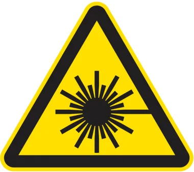
WARNING!
LASER RADIATION
AVOID EYE OR SKIN EXPOSURE TO
DIRECT OR SCATTERED RADIATION
CLASS 4 LASER PRODUCT
BEFORE USING THIS PRODUCT, READ AND FOLLOW ALL NOTICES AND SAFETY INFORMATION THROUGHOUT THIS GUIDE.
Some US states require additional licensing and/or registration. Many locations require operation only under the supervision of a trained Laser Safety Officer (LSO).
FOR PROFESSIONAL USE ONLY.
12/F, San Toi Building, 137-139
Connaught Road Central, Hong Kong
Email: support@laseros.com
If you have any questions about any of the content of this manual
or the safe operation of your new laser projector, please do not hesitate
to contact LaserDock Ltd. directly.
What’s in the Box
Every Ultra MK2 and Pro comes in its protective case, with:
- its 19V charger, with a plug or cable for your country (see Charger)
- an Ethernet cable, and a USB-C to Ethernet adapter for a cable to a phone or laptop
- spare safety keys
- interlock jumpers: small plugs for the RJ45 interlock connectors on the back (see Enabling the Laser E-Stop / Interlock). US units come with an E-Stop instead.
- WiFi antennas (the Ultra MK2 box in our unboxing video has a short one, and a longer one for when something blocks the signal or when the cube hangs upside down)
- a clamp adapter, for fitting your own clamp
- a steel safety loop with a carabiner, for the safety cable through the eye bolt when the cube is mounted at height
- a pre-loaded micro SD card (see SD Card Information)
Outside the USA, a STADIUM bundle also has an E-Stop, with a second Ethernet cable for it. The DJX, STAGE and STADIUM bundles add accessories (see Accessories); the product page lists what each bundle has.
Video: unboxing an Ultra MK2 STADIUM bundle
LaserCube Parts Diagram
- Laser Aperture: Laser light is emitted from this opening.
- Beam Block: Prevents laser emission and also restricts the laser scan from going into an audience. Can be locked using the screws either side.
- Mounting Bracket: For secure installation. Tilt may be locked using Screws 3a
- WiFi Antenna Connector: to facilitate wireless connection.
- Status LED: For showing Connection Mode.
- RJ-45 Ethernet Port: For cable connection to network.
- Safety Key Control: Prevents accidental operation. Resetting of the key control will be required if there is a power loss or remote interlock cycling.
- RJ45 Remote Interlock Connectors: In/Through. Provides a safety shut-off for terminating the laser emission via a jumper connection. A jumper is included with the product.* Do not attach Ethernet devices to these connectors.
**For the US LaserCube model, the jumper is not included. It is required to be operated with an E-Stop for FDA compliance and will not work with only the safety jumper installed. *
- Emission LEDs: Indicate when the Laser is emitting or ready to emit.
- Power Switch: Toggles the power ON or OFF.
- Power LED: Indicates when the Power Switch is ON.
- Power (19V DC) Input: Power connection/charging port via wall outlet.
- Charging Status LED indicator: Red = Charging, Green = Fully Charged
- Rotary / Push Menu Knob: Navigate CubeOS and adjust settings.
- LCD Display for CubeOS.
- USB Port: Connect a USB MIDI device (APC40 MK2 / APC mini MK2)
- MicroSD Card slot: Stores content for MIDI, ArtNet, DMX and Stand Alone mode.
- Internal Microphone: Audio input source for built-in visualisers.
- 3.5mm Audio Line Input: Audio input source for built-in visualisers
- 3.5mm Audio Line Output: Audio Laser show output to powered speakers.
- ILDA Ports (In/Out):
21a. ILDA Input Connector: DB25 Male: The LaserCube will automatically change from the internal LaserOS DAC to an external ILDA compatible DAC if connected to this port.
In the settings for the software that accompanies the external DAC, we suggest configuring the scan rate to 30000 points per second.
21b. ILDA Output Connector: DB25 Female: Duplicate of the internal LaserOS DAC signals, of those of an external DAC when connected to the ILDA input. *The LaserCube Pro has no ILDA output.
- DMX connectors (In/Out): Connect to a lighting desk / controller. Only connect real DMX equipment. A true DMX fog machine is fine, but most fog machines are not true DMX: their XLR socket is a remote socket, and many put mains power on it, which damages the LaserCube. Never connect a fog machine unless you are sure it is true DMX, even if a DMX cable fits.
22a. DMX Input. On the LaserCube Pro, DMX In and Out are the two 3.5mm TRS jacks (In on the left, Out on the right), which need adapter cables: see Connecting DMX cables to the LaserCube Pro.
22b. DMX Output
- Safety Eye Bolt: When mounted at height, attach safety cable through the eye.
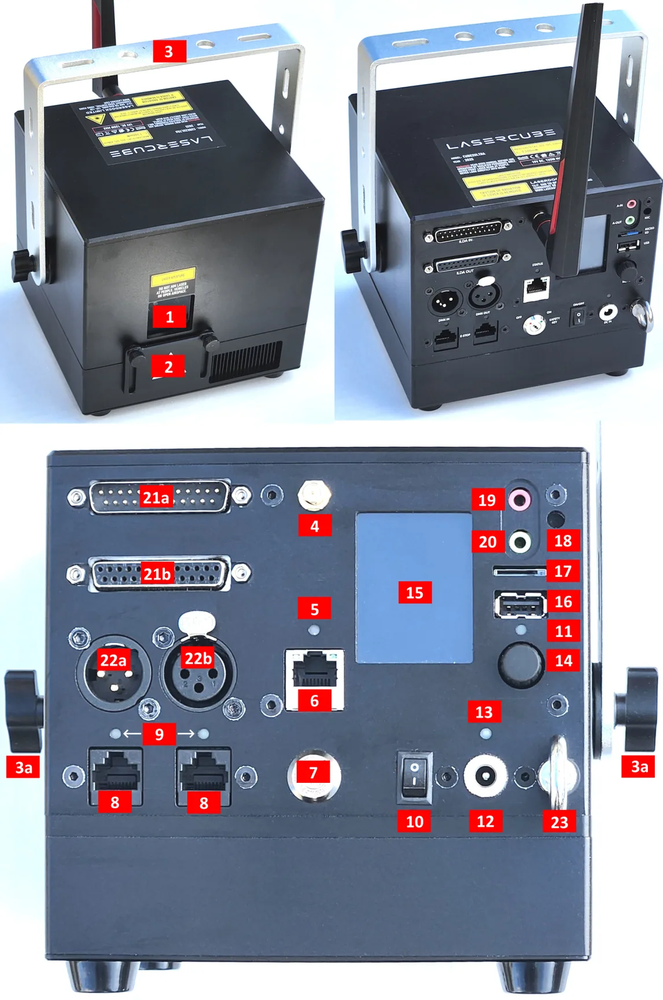
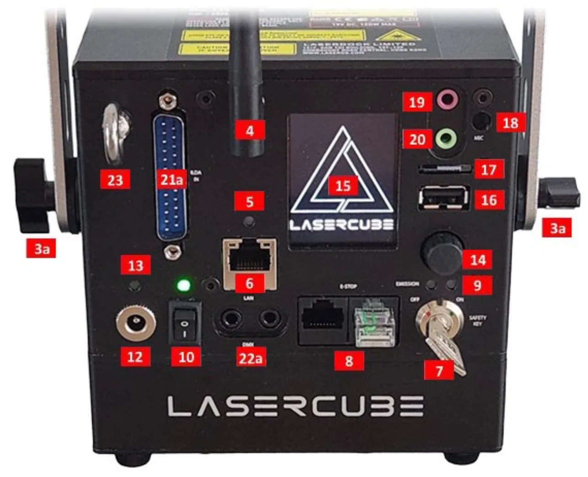
Technical Specifications
Current models first, then discontinued models. The Pro is the compact version of the Ultra MK2: same scanners and onboard hardware, with a smaller 70Wh battery, 3.5mm TRS DMX jacks instead of full-size XLR, and no ILDA output.
LaserCube Ultra MK2 10W
| Name: | LaserCube |
| Model: | Ultra MK2 10W |
| Laser Class: | Class 4 |
| Power: | 10000mW |
| Blue 455nm: | 5000mW |
| Green 525nm: | 2800mW |
| Red 638nm: | 2800mW |
| Battery: | 92.16Wh (3–4 hours runtime, 4 hours charging) |
| Modulation: | Analog 70kHz |
| Scan speed: | >35,000pps @ 7 deg |
| Max Scan Angle: | >37 degrees |
| Connectivity: | WiFi RP-SMA Female, 2.4GHz ILDA Ports (In/Out) DMX Ports (In/Out) USB-A Port (for APC USB MIDI device) 3.5mm Stereo Line Audio Ports (In/Out) MicroSD card socket Interlock RJ45 connectors (In/Through) |
| Size: | 15.5 x 15 x 15.5 cm |
| Weight: | 3.7 kg |
| IP rating: | IP51 (IP63 with the rain cover fitted) |
| Voltage: | 19V DC, 120W adapter |
| Warranty: | 1 year |
| Software: | Internal CubeOS + LaserOS Included |
| Safety: | Features key, interlock, beam block, indicator LED. Complies with latest safety standard IEC 60825-1 |
LaserCube Ultra MK2 6W
| Name: | LaserCube |
| Model: | Ultra MK2 6W |
| Laser Class: | Class 4 |
| Power: | 6000mW |
| Blue 455nm: | 2800mW |
| Green 525nm: | 1500mW |
| Red 638nm: | 1800mW |
| Battery: | 92.16Wh (3–4 hours runtime, 4 hours charging) |
| Modulation: | Analog 70kHz |
| Scan speed: | >35,000pps @ 7 deg |
| Max Scan Angle: | >37 degrees |
| Connectivity: | WiFi RP-SMA Female, 2.4GHz ILDA Ports (In/Out) DMX Ports (In/Out) USB-A Port (for APC USB MIDI device) 3.5mm Stereo Line Audio Ports (In/Out) MicroSD card socket Interlock RJ45 connectors (In/Through) |
| Size: | 15.5 x 15 x 15.5 cm |
| Weight: | 3.7 kg |
| IP rating: | IP51 (IP63 with the rain cover fitted) |
| Voltage: | 19V DC, 120W adapter |
| Warranty: | 1 year |
| Software: | Internal CubeOS + LaserOS Included |
| Safety: | Features key, interlock, beam block, indicator LED. Complies with latest safety standard IEC 60825-1 |
LaserCube Pro 6W
| Name: | LaserCube |
| Model: | Pro 6W |
| Laser Class: | Class 4 |
| Power: | 6000mW |
| Blue 455nm: | 2800mW |
| Green 525nm: | 1500mW |
| Red 638nm: | 1800mW |
| Battery: | 70Wh (2–3 hours runtime, 3 hours charging) |
| Modulation: | Analog 70kHz |
| Scan speed: | >35,000pps @ 7 deg |
| Max Scan Angle: | >37 degrees |
| Connectivity: | WiFi RP-SMA Female, 2.4GHz ILDA Port (In) DMX Ports (In/Out), 3.5mm TRS jacks USB-A Port (for APC USB MIDI device) 3.5mm Stereo Line Audio Ports (In/Out) MicroSD card socket Interlock RJ45 connectors (In/Through) |
| Size: | 13 x 13 x 13.5 cm |
| Weight: | 2.5 kg |
| IP rating: | IP51 (IP63 with the rain cover fitted: see Rain Cover) |
| Voltage: | 19V DC, 120W adapter |
| Warranty: | 1 year |
| Software: | Internal CubeOS + LaserOS Included |
| Safety: | Features key, interlock, beam block, indicator LED. Complies with latest safety standard IEC 60825-1 |
LaserCube Pro 3W
| Name: | LaserCube |
| Model: | Pro 3W |
| Laser Class: | Class 4 |
| Power: | 3000mW |
| Blue 455nm: | 1350mW |
| Green 525nm: | 850mW |
| Red 638nm: | 950mW |
| Battery: | 70Wh (2–3 hours runtime, 3 hours charging) |
| Modulation: | Analog 70kHz |
| Scan speed: | >35,000pps @ 7 deg |
| Max Scan Angle: | >37 degrees |
| Connectivity: | WiFi RP-SMA Female, 2.4GHz ILDA Port (In) DMX Ports (In/Out), 3.5mm TRS jacks USB-A Port (for APC USB MIDI device) 3.5mm Stereo Line Audio Ports (In/Out) MicroSD card socket Interlock RJ45 connectors (In/Through) |
| Size: | 13 x 13 x 13.5 cm |
| Weight: | 2.5 kg |
| IP rating: | IP51 (IP63 with the rain cover fitted: see Rain Cover) |
| Voltage: | 19V DC, 65W adapter |
| Warranty: | 1 year |
| Software: | Internal CubeOS + LaserOS Included |
| Safety: | Features key, interlock, beam block, indicator LED. Complies with latest safety standard IEC 60825-1 |
LaserCube Ultra MK2 7.5W Discontinued
| Name: | LaserCube |
| Model: | Ultra MK2 7.5W |
| Laser Class: | Class 4 |
| Power: | 7500mW |
| Blue 455nm: | 4000mW |
| Green 525nm: | 2000mW |
| Red 638nm: | 1500mW |
| Battery: | 92.16Wh |
| Modulation: | Analog 70kHz |
| Scan speed: | >35,000pps @ 7 deg |
| Max Scan Angle: | >37 degrees |
| Connectivity: | WiFi RP-SMA Female, 2.4GHz ILDA Ports (In/Out) DMX Ports (In/Out) USB-A Port (for APC USB MIDI device) 3.5mm Stereo Line Audio Ports (In/Out) MicroSD card socket Interlock RJ45 connectors (In/Through) |
| Size: | 15.5 x 15 x 15.5 cm |
| Weight: | 3.7 kg |
| Voltage: | 19V DC, 120W adapter |
| Warranty: | 1 year |
| Software: | Internal CubeOS + LaserOS Included |
| Safety: | Features key, interlock, beam block, indicator LED. Complies with latest safety standard IEC 60825-1 |
LaserCube Ultra MK2 2.5W Discontinued
| Name: | LaserCube |
| Model: | Ultra MK2 2.5W |
| Laser Class: | Class 4 |
| Power: | 2500mW |
| Blue 455nm: | 1300mW |
| Green 525nm: | 800mW |
| Red 638nm: | 400mW |
| Battery: | 92.16Wh |
| Modulation: | Analog 70kHz |
| Scan speed: | >35,000pps @ 7 deg |
| Max Scan Angle: | >37 degrees |
| Connectivity: | WiFi RP-SMA Female, 2.4GHz ILDA Ports (In/Out) DMX Ports (In/Out) USB-A Port (for APC USB MIDI device) 3.5mm Stereo Line Audio Ports (In/Out) MicroSD card socket Interlock RJ45 connectors (In/Through) |
| Size: | 15.5 x 15 x 15.5 cm |
| Weight: | 3.7 kg |
| Voltage: | 19V DC, 120W adapter |
| Warranty: | 1 year |
| Software: | Internal CubeOS + LaserOS Included |
| Safety: | Features key, interlock, beam block, indicator LED. Complies with latest safety standard IEC 60825-1 |
Product Labelling and Placement
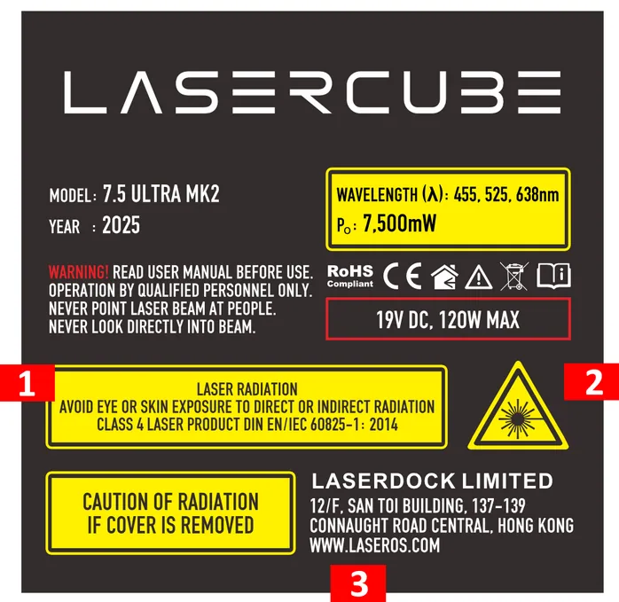 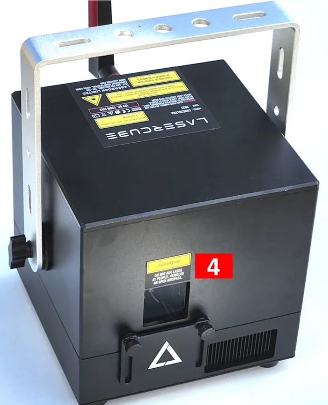 | 1. Explanatory 2. Hazard Warning Symbol 3. Manufacturer’s Identification 4. Laser Aperture Protective Housing Label (Appears on underside of housing) 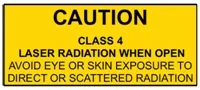 Aperture Label (Appears in front above aperture) 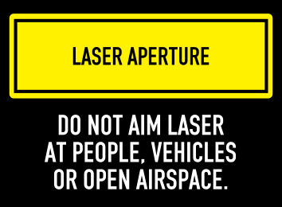 |
The label shown is from an Ultra MK2 7.5W. The label on your LaserCube shows its own model and laser power.
Safety Guidelines and Proper Usage
1. No scheduled maintenance necessary to keep the product in compliance. Simply keep the laser free from dust or other contaminates that could cloud or dirty the laser aperture. Cleaning the aperture window and vents are the ONLY maintenance allowed and must be performed with the unit powered down and locked off. Servicing by the user is not allowed. Any attempt to open or modify the unit is prohibited. Instant permanent blindness may result in case of an accidental eye exposure to the beam.
2. Do not expose the human eye directly or indirectly to focused or scattered laser radiation as loss of vision, complete blindness, and/or other serious injuries may result. Lasers are capable of starting fires at great distances. Do not use around flammable materials.*
3. Do not take apart, modify or dismantle the laser or operate it under abnormal current load (doing so will void the warranty). Strictly no service is allowed. Servicing should only be handled by authorized factory trained technicians.
4. Always treat your laser with great care as some components are very fragile and must not be subjected to shock.
5. Avoid turning the laser on and off frequently as it will reduce the diode life. This device does not have a set duty cycle; with the improved cooling of the Ultra MK2 and Pro, continuous operation should be fine.
6. From time to time, clean the laser aperture with a dry tissue that does not pill. You may also use an alcohol prep wipe and compressed air to blow dust from the vents. BE SURE the alcohol has dried fully before activating the laser. Cleaning the aperture and vents are the only user maintenance allowed and can ONLY be performed with the unit powered down and locked off.
7. Always keep all factory supplied labels on the unit and visible. These are required for legal compliance.
8. During use, be sure to leave an open space around all sides of the laser to facilitate airflow through the heat sink beneath the device.
9. Operate your laser only within the specified temperature range of 10°C (50°F) to 40°C (104°F). Failure to do so may result in weak output, overly strong output which will diminish the life of the unit and/or large output power swings. The LaserCube is thermostatically monitored so we can determine if a failure was temperature related. Such failures are NOT covered under our manufacturer’s warranty. Extreme cold and hot temperatures WILL cause a diode failure. Keep this unit climate controlled at ALL times.
10. Always ensure that the main power supply is properly grounded before use. Do not use a 2 prong IEC cord with this projector. You should always hook up a laser system in such a way that you have both a primary and backup means of instantly terminating laser emissions.
11. DO NOT USE the laser device if you suspect that it contains a defect of any kind either from manufacturing, damage, general wear or has a broken manufacturer’s seal. Contact us to return the unit to the factory for service and/or maintenance immediately.
12. Should you have difficulty operating the laser properly and troubleshooting does not work, go to www.laseros.com for support and RMA assistance if necessary. Do not attempt to service, modify or fix the laser yourself. You will be provided with instructions on how to send the laser projector back for repair.
13. Before using this product in any capacity, ensure that the unit is properly secured to prevent accidental beam shifts and that a safety cable is used for any aerial rigging.
14. This product is not a toy and should be kept inaccessible to unauthorized persons before, during, and after use. Keep away from minors.
15. The LaserCube includes all required safety features per international regulations. For US residents, authorized persons should only be employees of an FDA variance holder.
16. This level of laser light can interfere with Aircraft operation at many miles. DO NOT allow lasers to hit aircraft or enter airspace. Shining a laser at an aircraft in the US is considered a federal crime punishable by fines or jail time.**
17. Before using this product, it is the responsibility of the user to be familiar with all Federal and State reporting and usage requirements. Laws vary by state, some US states require additional licensing and/or registration. Many locations require operation only under the supervision of a trained Laser Safety Officer (LSO). An FDA variance is required to operate this product in the United States; a LaserCube bought in the USA comes with this variance, issued by X-Laser.
18. For all venues you must designate safe and restricted areas of the venue where persons are or are not allowed to be respectively. The “safe areas” should not be subject to any laser radiation either directly or indirectly. By protocol, there must be at least a 3 meter buffer between safe and restricted areas on all sides. In other words, all laser beams must terminate (ie. not be reflected away) in the restricted areas to avoid human contact. The laser must never be aimed at or allowed to be directed or reflected toward other people or reflective objects.
19. Do not stand in front of the laser while active. All persons should wear protective eyewear while rigging, maintaining, or otherwise working with the laser.
*Failure to follow the above precautions and other precautions contained in this user manual, particularly with regard to human exposure to laser radiation and electrical safety, may result in serious injury, loss of vision, electric shock or skin damage. Class 4 lasers must be handled and operated with care and extreme caution.
**This product shall NOT be operated by persons who are not trained in proper laser safety procedures and/or do not know how to use all components of a laser system properly. The safety procedures outlined in this manual must be observed at all times to provide you with safe and fun laser displays. Please contact us if you have any questions about how to safely and effectively use our products!
For more safety information & guidance please refer to:
IEC/TR 60825-3:2022 Laser Show Guidance
IEC TR 60825-3 Abstract
IEC/TR 60825-3:2022
Safety of laser products - Part 3: Guidance for laser displays and shows
IEC TR 60825-3:2022 gives guidance on the planning and design, set-up and conduct of laser displays and shows that make use of high power lasers emitting output between 380 nm and 780 nm.
This document is a code of practice for the design, installation, operation and evaluation of the safety of laser light shows and displays, and the equipment employed in their production. This document is also intended for persons who modify laser display installations or equipment.
The laser power needed to produce visually effective theatrical or artistic displays in large spaces such as theatres, arenas, or architectural sites is great enough to pose a severe accidental exposure hazard, even when personal exposure is very brief. For this reason, IEC TR 60825-14 states that only laser products that are Class 1, Class 2 or visible-beam Class 3R should be used for demonstration, display or entertainment purposes in unsupervised areas. Only under carefully controlled conditions and under the control of a trained experienced operator can laser products of higher classes be used for visual entertainment.
This document expands upon the principles considered in IEC TR 60825-14, providing specific technical guidance appropriate for the safe use of laser products used for the purposes of visual entertainment.
Enabling the Laser E-Stop / Interlock
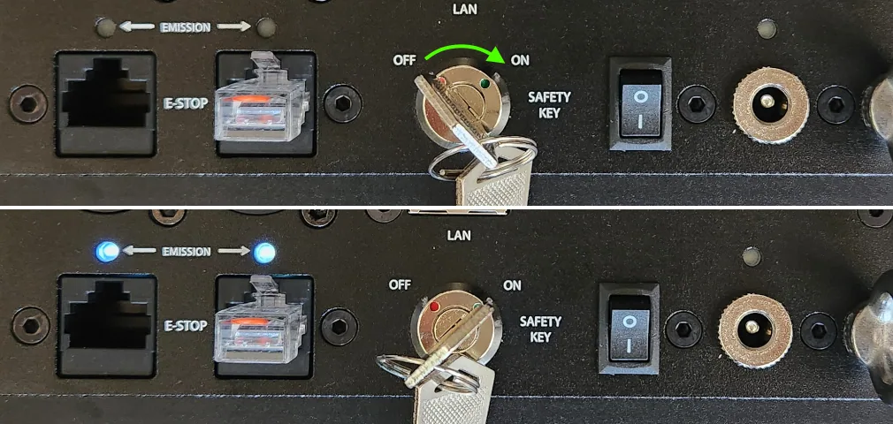
Follow these steps:
1) Connect the safety jumper to one of the E-Stop RJ45 ports*.
For the US version of the LaserCube, you will need to connect the E-Stop included with the unit. Please check the E-Stop Setup Guide section for instructions. This is required for FDA compliance and the laser will not work without it. Outside the US the E-Stop is optional: if you connect one instead of the jumper, follow the same E-Stop Setup Guide.
2) Insert the safety key and rotate from the OFF to ON position. The EMISSION LEDs will illuminate to show that the LaserCube is capable of Laser Emission.
3) To disable laser emission, turn the safety key from ON to OFF and remove the key.
E-Stop Setup Guide
This part of the guide applies to every LaserCube with an E-Stop connected: all US units, and units outside the US that use the optional E-Stop. If your E-Stop has no key, skip step 4.
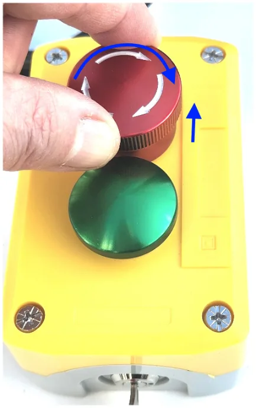
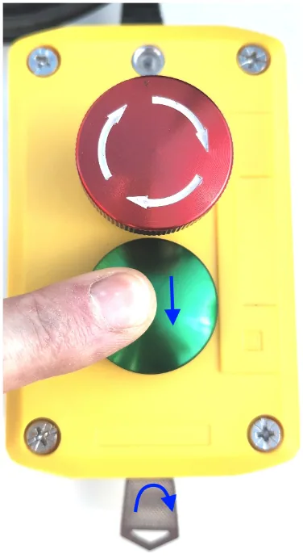
1) Connect the E-Stop pendant to the LaserCube.
2) On the laser, turn key to the “ON” position.
3) On the E-Stop pendant, if the red STOP switch is pushed in, rotate clockwise until it can be raised.
4) On the E-Stop pendant, turn the key clockwise to the “ON” position.
5) With the red STOP switch raised plus keys on both the laser and pendant set to the “ON” position the Interlock / Emission LEDs will flash slowly, once every 3 seconds.
6) After the second flash, the laser may be enabled by briefly pressing the green START button. The Interlock / Emission LEDs will begin flashing more quickly, once every second. After 10 seconds the LEDS will remain solidly on and the laser will be capable of emission.
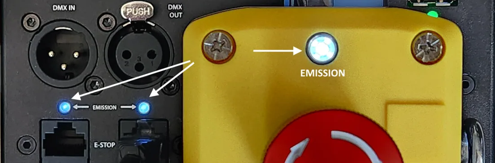
NOTE: In case of an emergency and you need to stop the laser, press the big red button.
Hardware Installation
1. Adjust the beam block with the unit powered off, make sure the key is not connected, secure projector aiming, then make adjustments to the beam block.
Note: You may need to repeatedly power the laser back on to check for the proper beam block setting until it prevents any scanning into audience areas. All beams must be maintained at least 3 Meters (10 feet) above the floor level where people may be present. Eye exposure to laser light can cause instant injury and permanent blindness.
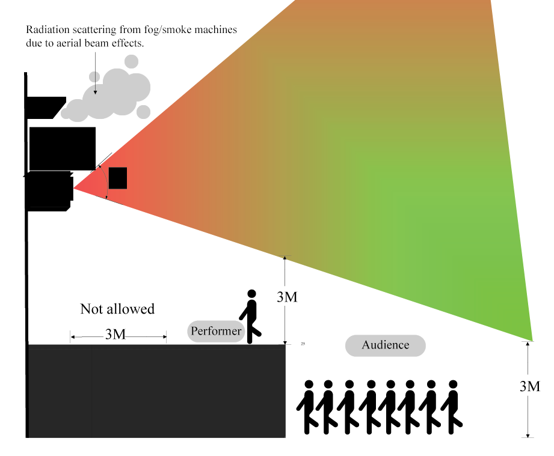
2. Place appropriate compliant ANSI area warning sign(s) in and around the laser show venue especially areas accessible to the audience.
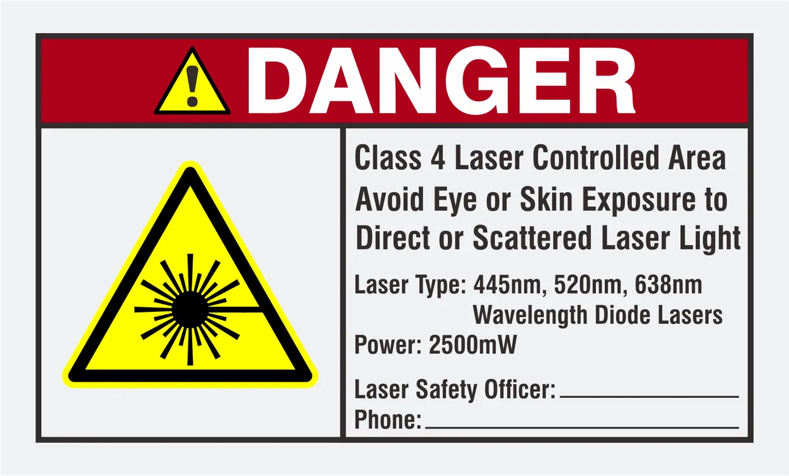
CubeOS LCD Settings and Status
The rear panel LCD displays certain status information, and allows configuration of the control mode and connection settings as well as a live preview of points entering the DAC*.
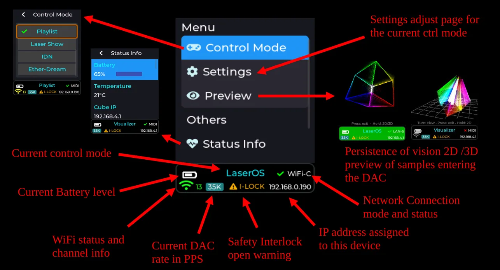
The status bar area at the bottom of the display gives the user a quick overview of the device, and displays any important messages or warnings. The background colour will also change to indicate certain connection states. e.g. a green background indicates active samples being received over the network, and a cyan background indicates the ILDA analog input is being used (overriding the current DAC data for the currently selected ctrl mode).
The status bar shows the battery level, the control mode, the connection mode, the cube’s IP address and, while the laser is not armed, an I-LOCK warning. In WiFi connection modes, a WiFi symbol at the bottom left is green when the connection is good and turns yellow or red with interference.
*Note: The live preview only works for DAC samples received over the network, or internally generated projections, NOT data from the analog ILDA port on the back of the device.
Main Menu and Preview
Turn the knob to move through a menu and push it to open an item. To go back, turn the knob to the back arrow at the top left of the page and push it. The main menu changes with the control mode: in Visualizer mode, for example, it starts with Control Mode, Settings, Preview, Audio Visualizer and Viz Options.
Preview (firmware 2.0 and later) shows on the screen what the cube is playing, even while the laser is not armed (not the ILDA input: see the note above). A line under the preview says what the knob does: in Visualizer mode, turn it to skip to the next visual, press it to leave the preview and hold it to switch between the 2D and 3D view. In the 3D view, turning the knob changes the point of view. General Settings sets which view opens first.
Control Modes
The Ultra MK2 / Pro currently has 8 selectable control modes:
- LaserOS control mode
- ArtNet control mode
- DMX control mode
- Visualizer control mode
- Playlist control mode
- Laser show control mode
- IDN (ILDA digital network protocol, streaming up to 35K pps)
- Ether Dream (DAC network protocol)
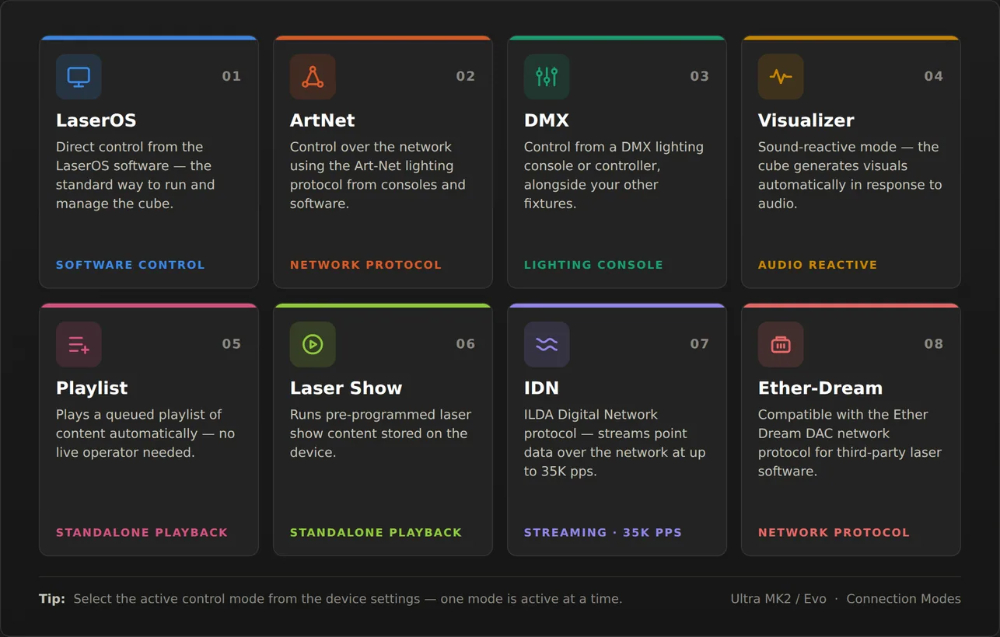
LaserOS Control Mode
This mode is used when you want our LaserOS application to be in complete control of the LaserCube, or you wish to use any of the supported third party applications like Liberation, LaserShowGen, Madmapper etc. For TouchDesigner, use Ether Dream Control Mode.
In this mode all projections are streamed over LAN/WiFi directly to the LaserCube, so the Settings→Projection menu items will not be available since these are now adjusted via the LaserOS settings menu, or other third party software projection settings.
- Select Control Mode, LaserOS
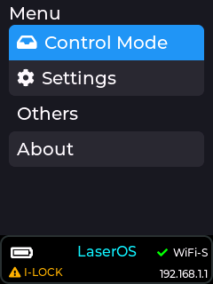
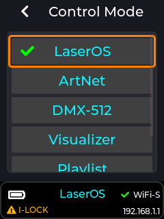
- Select Settings -> Connection -> WiFi server
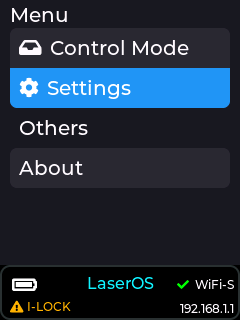
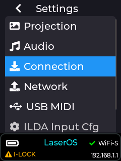
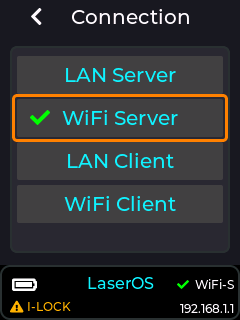
- when using WiFi server, connect to the LaserCube’s Access Point with your mobile or desktop / Laptop device. By default, the SSID is LaserCube. The default WiFi password is Laser2020. These settings may be changed under Settings -> Network -> WiFi Server.
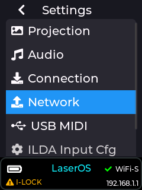
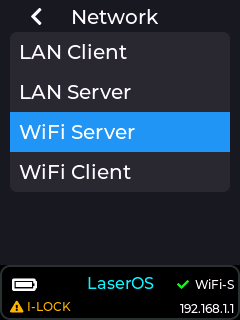
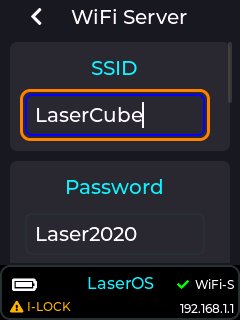
In order to get the best projection quality with minimal projection interruptions we recommend using the WiFi scan button in the WiFi server settings page to show the current congestion status of the available 2.4GHz WiFi channels. If the channel scan is heavily congested then we recommend using a wired connection method. Using WiFi outdoors should be absolutely fine, but in some apartment buildings it could likely result in projection break-up unless the supplied LAN adapter is used with your mobile/desktop device.
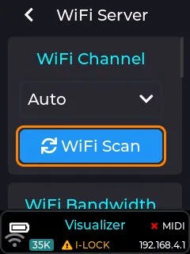
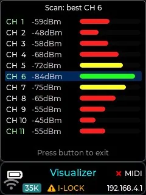
- If using LAN, we recommend using LAN client if you are planning to connect to your home router or switch. If no DHCP server is present on the network to assign an IP address (e.g. direct LAN cable connection between mac and LaserCube), the LaserCube will self-assign an APIPA address, or you can instead select LAN server and the cube will auto assign an IP address to your MacBook or Windows Laptop etc.
The images below show how to set the connection mode:
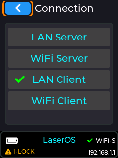
On firmware before 2.1, if changing the connection method, the LaserCube will ask you to reboot the device. Highlight “YES” using the red cursor box then push the encoder knob to confirm. Firmware 2.1 and later change the connection method without a reboot.
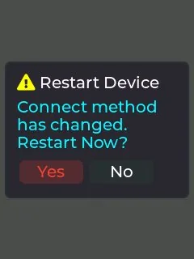
Installing LaserOS 0.18.1 or later
Before you can add content to your Ultra MK2 / Pro, or directly stream to it, our LaserOS desktop software must firstly be installed onto your PC/Mac. Go to http://www.laseros.com/ and scroll down until you see the download links as shown in the image below:
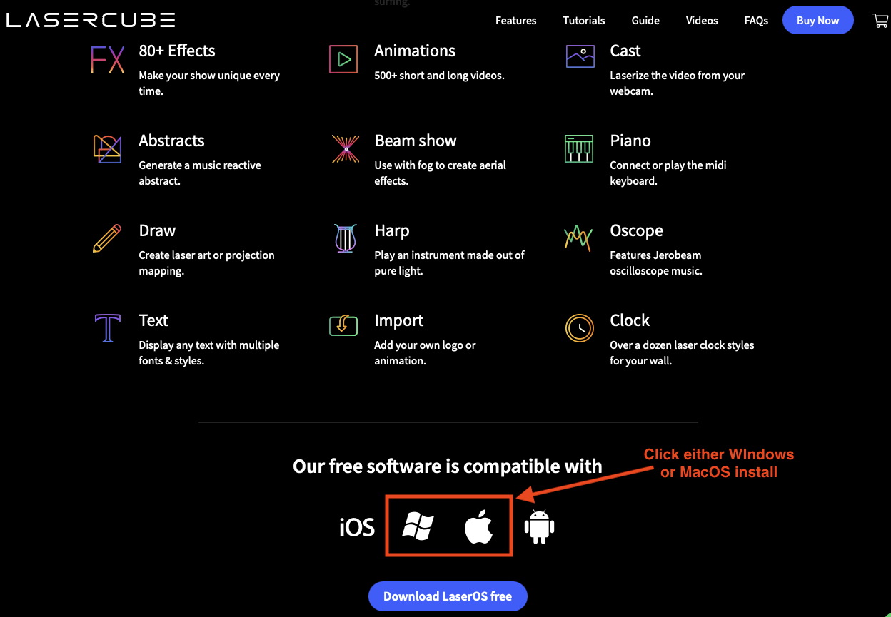
Alternatively, you can use the direct web links provided below for PC/Mac operating systems.
Note: You cannot use the iOS or Android version of LaserOS to export to the LaserCube's SD card. Mobile platforms are for direct streaming to cubes only. Adding content must be done via PC/Mac version.
Windows Platform
- Follow this link to download for PCs running Windows.
- Double click on the downloaded .exe file to install LaserOS.
- Occasionally, Windows will display the following warning. Click on “more info” to enable the “run anyway option”. Click on “run anyway”.
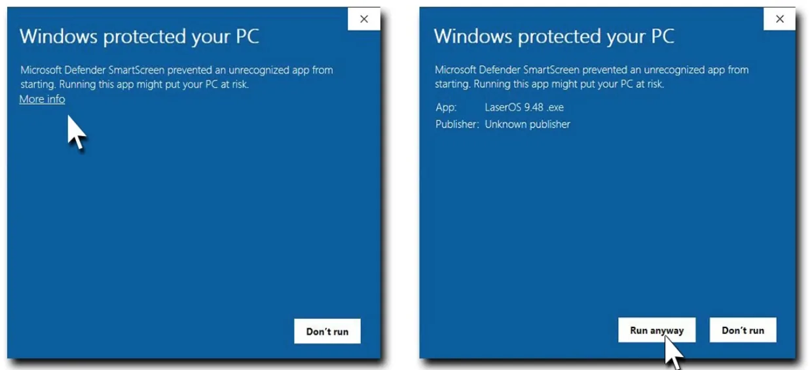
macOS Platform
- Follow this link to download and install for macOS.
- Double-click on the .pkg file and run the installer app.
Follow the instructions for installing LaserOS on your chosen platform, then run the software by opening Launchpad on macOS, or click the icon for LaserOS on your desktop if using a Windows platform.
Using LaserOS
After connecting your LaserCube(s) over LAN or WiFi to your network, the LaserOS app will detect if any are connected. The LaserCube can then be turned on or off from the power menu in the top left corner of the app. Pressing the ESC key will also turn it off.
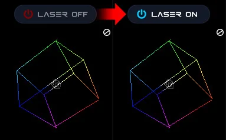
Note: While securing projector aiming, turn off the unit and remove the key. Check for the proper beam block setting. Repeat until beam block prevents any scanning into audience areas.
From the main menu, you can easily select from the different apps, modes and laser show effects available. Audio, power level, colour/hue and other settings can also be adjusted from here.
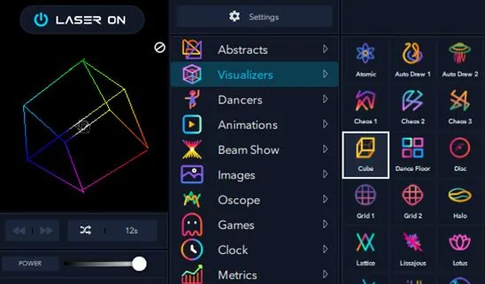
To make your own content in LaserOS, see Making Content in LaserOS.
Playlist Control Mode
This control mode is used to play custom playlists exported from our LaserOS app to the SD card.
It can be selected by going to the Control Mode menu and selecting “Playlist” from the options.
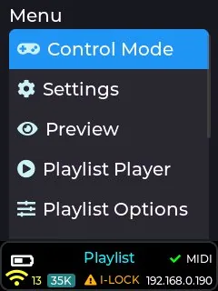
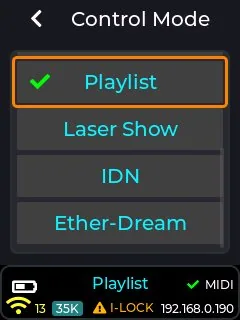
Creating a custom playlist
Before being able to project content on the LaserCube in playlist mode you must first create a playlist or export an existing playlist to the LaserCube's SD card using the desktop version of our LaserOS software.
The method of adding new content to the LaserCube is via a LaserOS playlist, by either selecting an existing one you already created, or by creating a new one from scratch.
You can create a new playlist by selecting the playlists app from the centre pane, then click the small ‘+’ icon as shown in the image below:
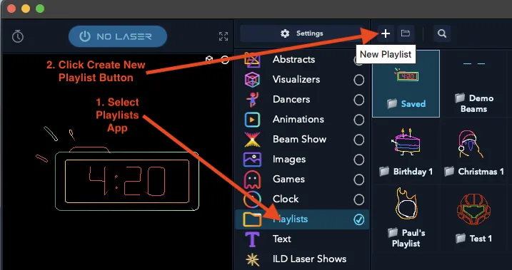
Once you create a playlist, you will now be able to drag content from the various categories into the playlist pane on the right hand side. You can also add content to a playlist by right clicking on any CUE within laserOS, and then use the “add to playlist” button.
This is the method we will show in this document, so for now you can simply save the empty playlist with the name of your choice as shown below:
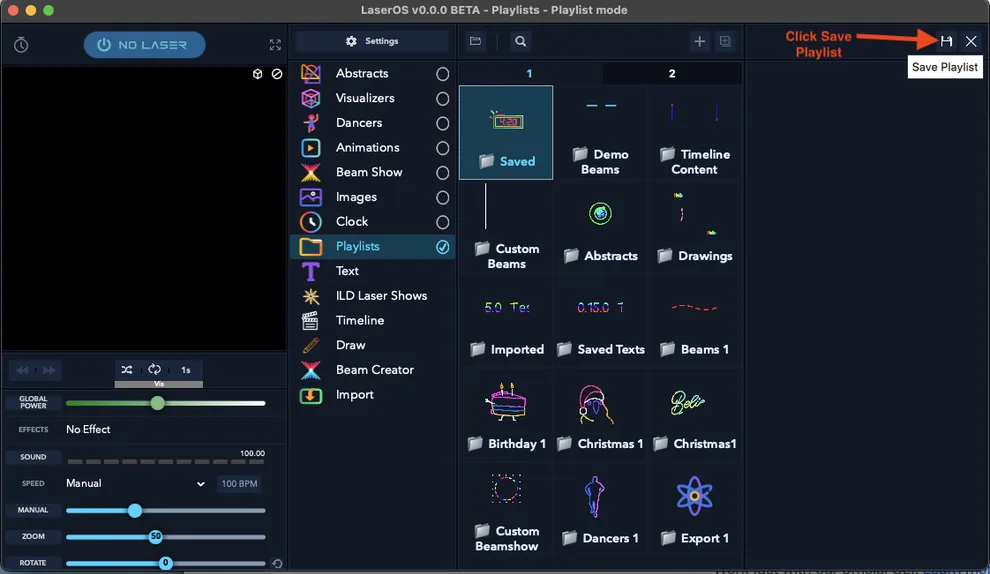
When you click the “save playlist” button you will need to give the playlist a name. Keep this name as short as possible, as the LaserCube can only display a limited number of characters on the LCD when selecting a playlist from the drop down menu on the LaserCube's LCD.
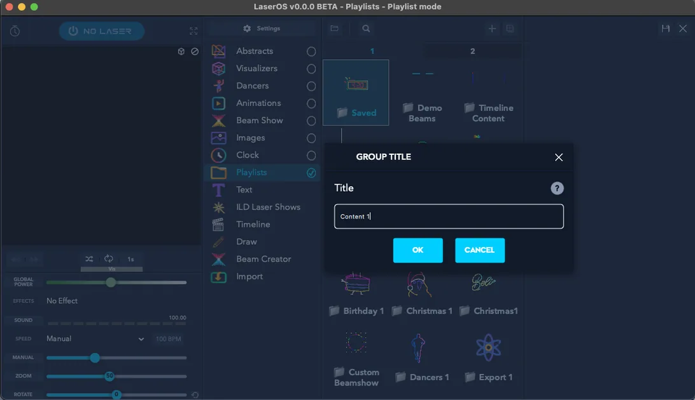
In this example guide we name the new playlist “Content 1”.
Now you have a custom playlist added, it is now possible to add content to the playlist by selecting items from the various LaserOS categories and right clicking on the CUE you wish to add to the playlist.
When you right click on a CUE (Animations→Vectors→Axe Chop in our example), a pop-up menu will appear which will then allow you to select the newly created playlist from the “Add To Playlist” drop-down, then click the “Add” button to add the item to the chosen playlist as shown below:
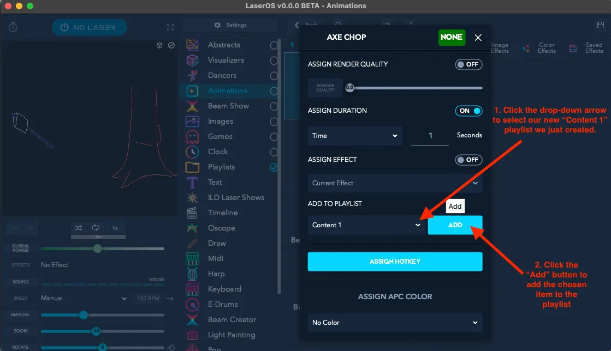
Note: The above image also shows a manual “Assign Duration” option which can be set to disabled for now, and its purpose is described further down in this document.
Adding a custom SVG to the Playlist
If you have any custom content you wish to display with the LaserCube such as a company logo in SVG file format, you can add this to the playlist by using the import app within LaserOS.
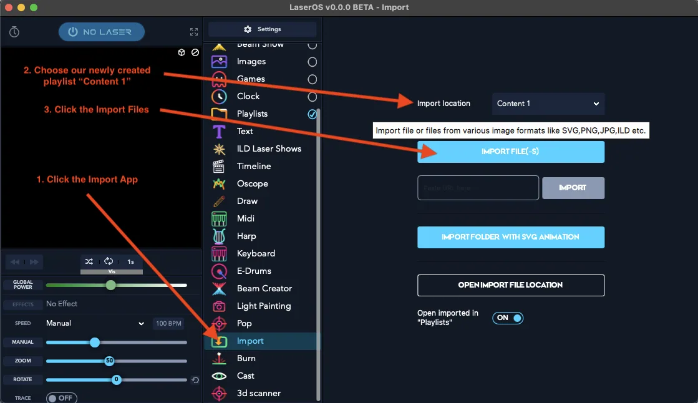
Select the import app, then select the playlist you wish to import content into, then click the import files button.
Note: If you have an animated SVG then you would click the “import folder with SVG animation instead”. See the LaserOS video tutorials on laserOS.com for more info on this feature.
Select the SVG file you wish to add using the file browser window which appears after clicking the “import File button”
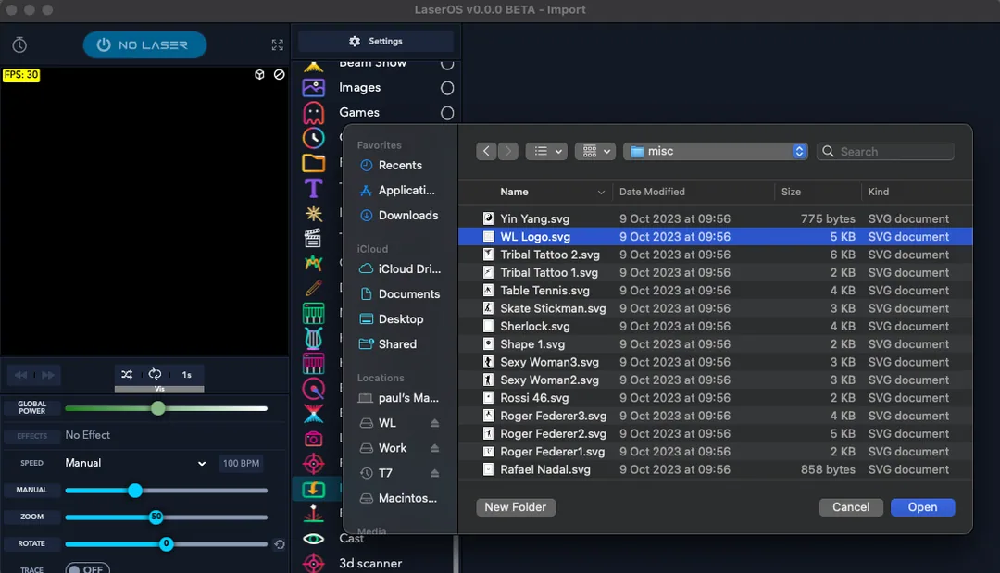
In our example we are importing the Wicked Lasers Logo as an SVG file.
The import app will also allow other image file formats (.png, .jpg, .ild), but for the best results we recommend using SVG or ILD formats.
If you select a non vector image format like .jpg or .png then this type of image will need to be converted to vector format. A separate popup window will be displayed to allow user adjustments of sensitivity, line length and other parameters with a live preview of the result, as shown below:
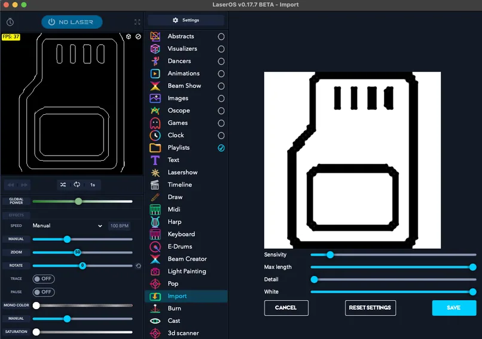
After importing your custom image you can return to the playlists app and select the “Content 1” playlist by double clicking which will then show all the items added to this playlist.
The playlist should contain all the items you have selected and added via the right click popup menu. The image below shows the newly added custom SVG called “WL Logo”
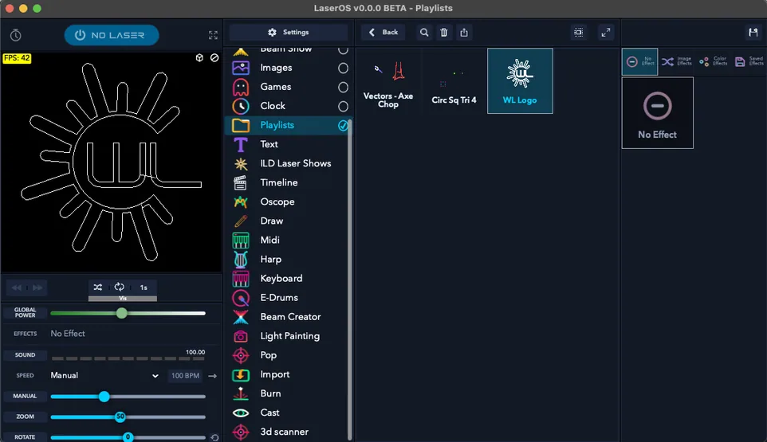
Some content imported from SVG may need its render quality changing depending on how complex the image is. Since the Galvo Scanners can only render a certain number of points per second you may see the projection start to flicker if the imported SVG is too complex, or the quality slider is adjusted to maximum quality, as the laser will need to render more points in order to display the image with sharper corners and more detail. You can turn on “Show FPS” in Settings→General in order to get an idea of the frame rate the item will render at. (>=45 FPS will not appear to flicker).
You can adjust the render quality by right clicking on an item in the playlist and turning on the “assign render quality” toggle followed by adjusting the render quality slider as shown below.
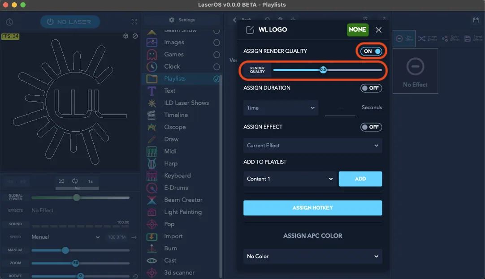
It is also possible to assign a manual duration override to the playlist item, or set the number of times an animated item will play before the playlist player on the LaserCube moves to the next item in the playlist.
This can be seen in the previous image below the render quality slider options.
To perform a manual playlist duration override on an item, enable “Assign Duration” option and select either “time” or “cycles” from the drop down.
Note: The “Beats” option is not currently supported on the LaserCube.
If time is selected then the number of seconds between 1 and 999 can be entered, and if animation cycles is selected then the number of times an animation plays can be set between 1 and 999.
The animation cycles option is especially useful when assigned to a scrolling text item created with the LaserOS text app, as it can be set to animation cycle of 1 so the scrolling text only displays once before moving on to the next playlist item. If this was no set then the text may have only partially scrolled before moving on, depending on the playlist player CUE delay time.
Note: The “Assign Effect” option in right-click CUE popup is not currently supported on the LaserCube.
Exporting a Playlist to the micro SD card
Once you have finished adding CUE’s to your new playlist, you can then export the entire playlist to the micro SD card.
Switch the LaserCube off before you take the micro SD card out. You will need to insert the micro SD card provided with the LaserCube into a USB 3.x reader and then connect the reader to your PC/Mac.
The SD card should appear in File Explorer / Finder as a removable device with the volume name “WL”. The card should also contain a folder in the root called “Lasercube”.In LaserOS, select the playlists app, then select the playlist you wish to export, then finally click the SD card export button as shown in the image below:
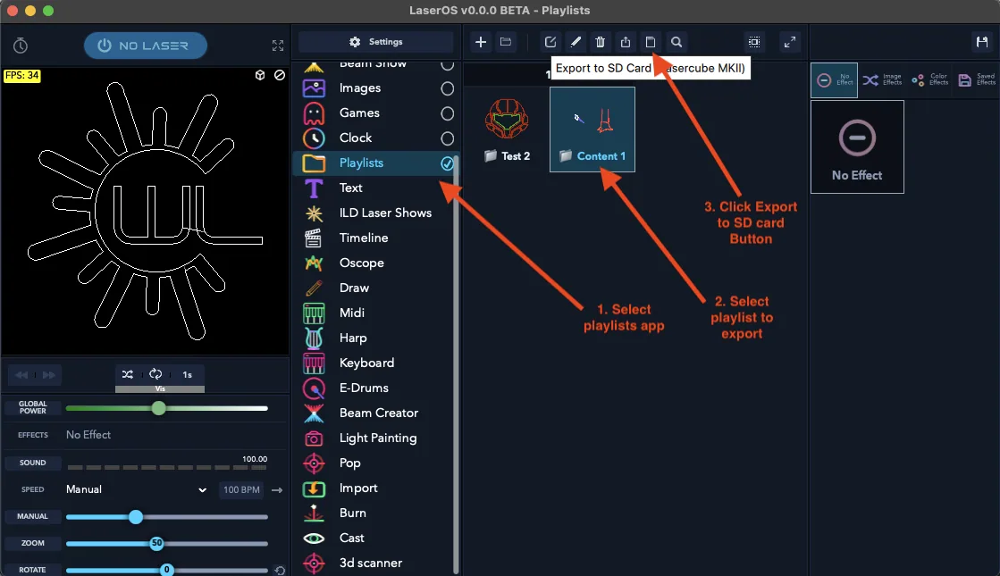
Your OS may ask for permission to access files on a removable volume, if so then click “Allow”.
If the SD card is detected on your machine then LaserOS will show an export progress bar depending on how many items need exporting to the SD card.
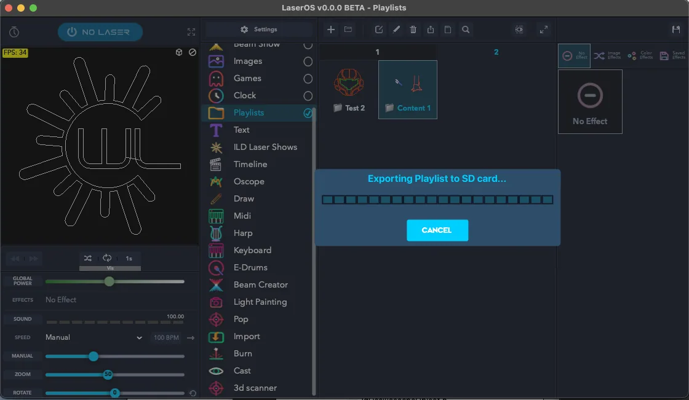
If the playlist already exists on the SD card (as you may have already added it once before) you may be prompted as to whether you wish to overwrite the playlist on the SD card or not, as shown below.
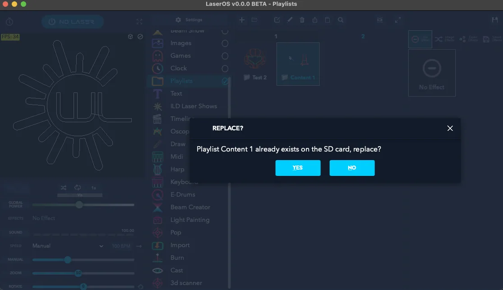
If you accept to replace the playlist then the previous playlist on the SD card will be deleted and replaced by the current one.
If when you click the export to SD card you see an “SD card not Found” message box, then please ensure you have inserted the provided SD card into your reader and into your PC properly, and also check that the volume name of the SD card is shown as “WL”. If the SD card volume name is not “WL” without the quotes then you can right click on the removable device and rename the card to “WL” using Windows file manager. This should only be necessary if you have used your own SD card and forgot to rename the volume. The SD card should also contain a folder called “Lasercube”. If it does not then you need to download the factory SD card image again from our GitHub here: https://github.com/Wickedlasers/mk2SDContent
The image below shows the contents of the SD card with the new “Content 1” playlist folder and files added.
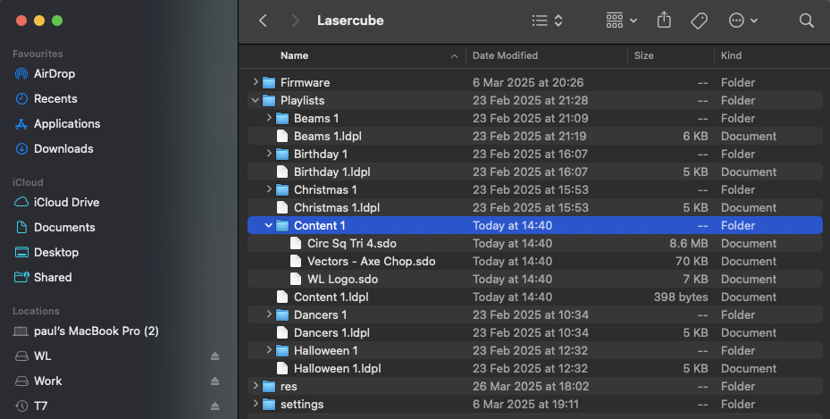
Each playlist exported from LaserOS to the SD card also has a playlist file which is a human readable JSON file with the extension “.ldpl”, and each playlist also has an associated folder of the same name containing the actual CUE files for each item in the playlist. The order in which CUEs will be played on the device (with shuffle mode disabled) is based on the order of the entries in the “.ldpl” file.
Note: Both the folder and playlist “.ldpl” file must be present for the playlist to be available on the device. e.g. if either “Content 1.ldpl” or “Content 1” folder are not present then “Content 1” will not be listed in the playlists drop down on the device.
Manual Customization of the Playlist File
The image below shows a small preview of the contents of another playlist already provided on the factory supplied SD card for the Ultra MK2 / Pro. This is an extract of the Beams 1 playlist “.ldpl” JSON file viewed in a text editor:
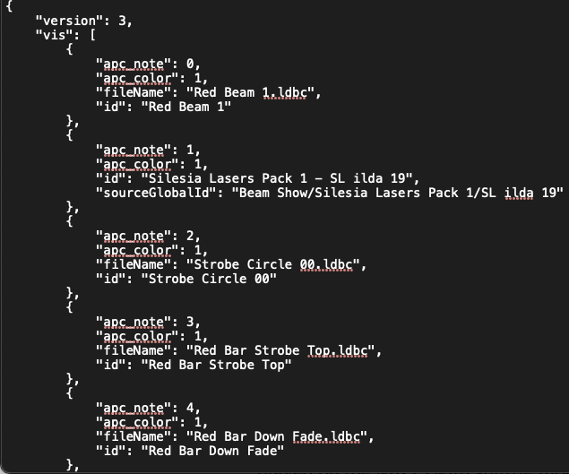
This file has been edited after export in order to add custom MIDI mapping for an APC40 MK2 controller. “apc_note” field within the JSON array allows the user to choose which button on the APC will activate this playlist item.
You will need to consult the data sheet for the relevant APC MIDI device to determine which MIDI note value corresponds to which button on the APC.
Similarly, “apc_color” field allows the user to choose which colour the button will be (if RGB is available on the chosen APC button).
The available values for “apc_color” field are:
| 1 | Red |
| 2 | Green |
| 3 | Blue |
| 4 | Yellow |
| 5 | Cyan |
| 6 | Magenta |
| 7 | White |
| 8 | Orange |
| 9 | Purple |
| 10 | Salmon |
| 11 | Pink |
| 12 | Lime |
| 13 | Cornflower |
| 14 | Mocha |
| 15 | Ice Blue |
If playlist items do not have these fields present in the JSON file when an APC40 MK2 or APC mini MK2 is used in the playlist control mode then the playlist items will be automatically allocated to the available APC grid buttons.
Note: The Ultra MK2 / Pro has this playlist and others as part of the demo SD card provided with the device.
Using the new playlist on the Ultra MK2 / Pro
To project the CUE’s from the example “Content 1” playlist we just exported from LaserOS, you need to firstly safely eject the SD card from your PC/Mac. This can be done by right clicking the SD card in file manager and selecting “Eject”.
With the cube still switched off, place the SD card back into the device, then power on the cube. Select playlist control mode, then select the “Content 1” playlist which should now be available in the playlist drop-down within the playlist player menu.
The photo below shows the custom SVG that was imported to LaserOS, then exported to the LaserCube as “Content 1” playlist.
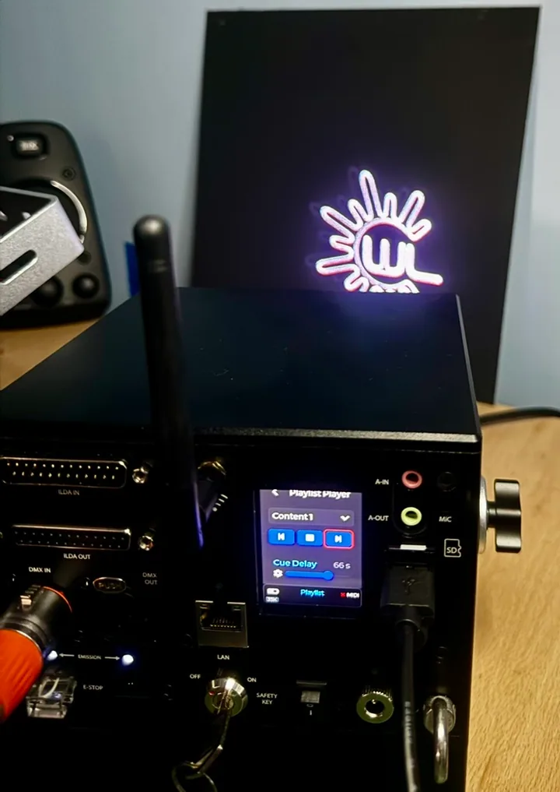
Playlist Player UI
The playlist that the device will use is selected from the Playlist selection menu drop down.
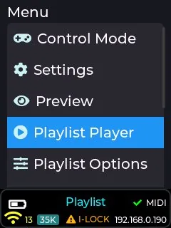
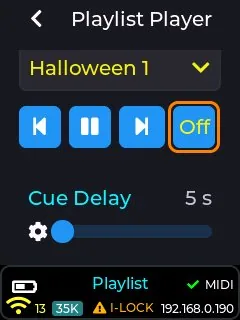
The chosen playlist selection will be saved and used again even through a power cycle of the device.
Note: The last chosen playlist will project immediately after a power cycle if the device is in playlist control mode and “Power-On play” is enabled in the playlist options menu, but projection will only occur once the interlock is enabled. This is to allow for fixed installations to quickly start up and project the users chosen content with minimal setup time. If you do not want the playlist to automatically start projecting at power-on, set “Power-On Play” to Disabled in the playlist options menu.
The main media controls for the playlist player are shown below.
Auto-Play (when enabled) will automatically cycle through another CUE in the currently selected playlist every <cue delay> seconds. Auto play is enabled when the pause button is visible, and pressing the pause button will move to auto-play disabled, and UI will show the play button.
Press the play button to re-enable the CUE Auo-Play. While Auto-Play is off, the playlist will remain at the last selected CUE.
Note: If an APC MIDI device is connected and a CUE is manually selected using an APC button, or a CUE is manually selected via the playlist web app, then the device will no longer cycle through items in the playlist until the Auto-play button is selected again.
The playlist can also be shuffled in order to randomize the order of CUE’s in the playlist.
CUE Playback Speed
The user can adjust the playback speed of any CUE being projected while in the playlist control mode.
This can be done using the Settings→Playback Speed menu
The playback speed slider can also be assigned to a MIDI knob or fader if using an APC40 MK2 or APC mini MK2 (see MIDI Mapping or the online wiki).
Playlist Player Web App
The playlist control mode includes a web server which can be used to control the LaserCube from your mobile or Laptop/PC device via a web browser (tested with Safari / Mozilla Firefox).
You firstly need to connect to the LaserCube using the chosen connection method. If WiFi server is your chosen connection method (see settings→connection menu), then look for the network “LaserCube” in the WiFi list and connect using the default password “Laser2020”.
Once your device’s WiFi has connected to the LaserCube, go to your device web browser (Firefox, Safari etc) and enter the IP address of the cube. This is “192.168.4.1” by default, and can be checked in settings→network, or just look at the LCD status bar for the IP address, as it is located in the bottom right corner.
Example image of the playlist web app being served from the cube to Firefox macOS browser:
Quick Image Settings
The Quick image settings allow you to adjust basic projection items such as projection size, rotation, and output power.
An example of the quick image settings menu is shown below:
Note: Any of the image settings can be reset to their default values by pressing the button to the right of any slider.
Rotation
This allows the image to be rotated from 0 to +/- 90 degrees
Zoom
This allows the image size to be adjusted from 10% to 100%
Power
This allows the projection power to be adjusted from 0% to 100%
Quick Player Settings
The Quick player settings allow changes to how the player behaves, including its colour theme.
This menu also shows the interlock status, current battery percentage, and cube internal temperature at the bottom of the menu.
- Theme Selection
The theme selection allows the colour theme of the web app to be changed. Options are Dark Blue, Icy Green, Dark Red, Pink, Purple, or Orange. The theme choice is stored using local web storage on your device’s web browser.
Animated Previews
This will show the playlist items as animated icons instead of static. Note that this is only possible on certain devices that have sufficient performance to allow many animated icons. (Apple devices have known issues with poor performance of animated image files such as animated .webp files, so it is recommended to have this set to off).
Shuffle Playlist
This allows the playlist items to be played in a random order, instead of in playlist sequence order.
CUE Delay
This changes how many seconds each CUE will be projected for, before moving on to the next CUE in the playlist (Only when Auto-Play is enabled).
Play Speed
This adjusts the animation speed of any animated projections (100 = 1x play speed)
Quick Effect Settings
This menu allows you to quickly select an image effect and/or a colour effect. Most of these effects are also audio reactive. A long-press on items with a blue mark in the bottom right will bring up any adjustments that can be made to the selected effect. Note the effect must be selected before accessing the effects adjustments.
You can see a description of all the available effects in the Effects Section
Note: You can only have one image effect and one colour effect active at once. Choose “No Effect” to turn off any active image/colour effect.
Playlist Options Menu
The playlist options menu is present on the top level menu (below the playlist player menu item) of the LCD UI when in playlist control mode
This menu allows you to adjust the fade in/out time between playlist items (default 250ms), the source of the web app html to be selected, and also allows the user to select whether the playlist starts projecting at power-on (immediately after interlock is enabled), or only after activating the projection button in the playlist player or web app. The default for power-on play is enabled, and any changes to this are retained thru power cycle.
The Fade time is used to control how fast the current item is faded out, and the new item is faded in. The fade is done through adjusting the brightness of the image/animation. Set this to 0ms for no fade in/out. Fade is retained thru power cycle.
The Options for Web html are internal factory app (default selection), or SD card. The SD card option is useful if the user wishes to customise the provided web app, assuming the user has the relevant HTML/CSS/JS knowledge.
Note: The web app is provided on the latest SD card image in the following location: /Lasercube/res/web/playlist_index.html
The file is a single html file containing all html / css / javascript to run the web app.
The latest SD card contents are available on our GitHub Here: LaserCube SD Card Contents (https://github.com/Wickedlasers/mk2SDContent)
Laser Show Control Mode
The latest version of the laser show player now has a categories selection drop-down menu, allowing the user to choose the type of laser show to play.
There are currently 38 shows to choose from throughout the 7 provided categories (EDM, Christmas, Thanksgiving, New Year, Birthday, Wedding, Halloween).
After choosing a category, selecting the Play icon will begin the show, and the player will advance to the next show in the selected category after the current show has finished playing. Manually choosing a different show from the playlist drop-down will also start the show, and also selecting via a connected MIDI controller.
Show audio will be played from the 3.5mm stereo audio output socket.
If Cube Link is enabled – see the Cube Link entry here: Cube Link
Selecting Play on a Cube Link Master will begin playback on the Master, plus any
Cube Link Slave devices configured with the same Link Channel and PIN.
For laser shows designed for more than one projector, ensure the Group number is set on each Cube Link device. Cube Link connected Slave devices have the status area background changed to purple. Also ensure all cube link devices have the same show category selected before starting play (e.g. all devices have “EDM Shows” selected).
Note: The Laser shows are provided on the SD card supplied with the device. If no items are shown in the drop down then this could be due to the SD card not being inserted, or not having the factory contents present on the card. The latest SD card contents are available on our GitHub Here: LaserCube SD Card Contents (https://github.com/Wickedlasers/mk2SDContent)
Multi-projector Laser Shows
Using Cube Link, the playback of multi-projector laser shows can be synchronized.
Note: Ensure WiFi antennas are connected on all units before using Cube Link.
Example: Alive (2CH) Laser Show
Choose one LaserCube to be the Master. This will be the one which commands
playback to start on all the slaves. Set the Link Channel and PIN to be the same on all Cube Link connected devices. Select Group corresponding to the parts of the Laser Show, so for Alive (2CH) all Group 1 devices will project one part, all Group 2 devices the other.
Master
Slave
For a 2 channel show using 4 projectors, set 2 projectors to Group 1 and 2 projectors to Group 2. Only have one configured as a master though.
Selecting Alive (2CH) on the master will now start projection on all devices, providing the same playlist (EDM Shows in this example) is already selected on all devices.
Visualizer Control Mode
There are currently 91 audio reactive visuals in the current (v2.0) release of the Ultra MK2 / Pro firmware. More visualizers will be added in future firmware updates.
The factory supplied SD card also includes example MIDI mapping of some of these visualizers to the APC40 MK2 / APC mini MK2 grid buttons.
CubeOS has 91 built-in audio reactive visualizers, and these can be manually selected via the drop-down list once an active playlist has been selected (or “All” playlist selected)
These react to the Audio Input source configured in Settings -> Audio -> Audio Input, and the input can be either set to the built in microphone, or the 3.5mm stereo audio line input jack. The audio gain may also need to be adjusted based on the volume of the external audio.
Some of the visualizers are also affected by the current tempo setting which can be set in Settings→Tempo menu on the LCD. The transition time when moving between visualizer CUE’s can also be adjusted through the Viz Options menu. Auto play at power-on can also be adjusted.
Below is the current list of visualizers present in the v2.0 Ultra MK2 / Pro firmware in visualizer ctrl mode:
Spectrum, Waveform & Audio Meters (16)
| Spectrum 1 | FFT spectrum analyser - a row of vertical frequency bars rising from the baseline, coloured across the spectrum. | |
|---|---|---|
| Spectrum 2 | Spectrum-analyser variant drawn in a second bar style. | |
| Spectrum 3 | Spectrum analyser mirrored about the centre line, bars growing up and down from the middle. | |
| Spectrum W1 | Terrain-style spectrum wave (port of ldTerra) - the FFT drawn as a rolling illuminated waveform landscape. | |
| Spectrum W2 | A second spectrum-wave style with a different rolling FFT waveform. | |
| Voice | Voice / FFT-reactive visualizer that shapes the beam to the vocal content of the audio. | |
| Vocoder | Vocoder-style channels - the spectrum split into bands that pump with the music. | |
| Waveform | A live oscilloscope trace of the raw audio waveform drawn straight across the frame. | |
| FFT Beams | One radial beam per FFT bin fanning out from centre; length follows magnitude, hue runs bass=red to treble=violet. | |
| Audio Horizon | A mountain-skyline silhouette from 16 FFT bins, mirrored on a centre line; it scrolls and its peaks ride the audio. | |
| Audio River | A horizontal waveform from three bass/mid/treble sines with a dim reflection below, scrolling like a river of light. | |
| Audio Curtain | A column of hanging vertical strands that sway to their own FFT bin, with a travelling wave rippling through them. | |
| Audio Marquee | Vertical FFT bars scroll in from the right and wrap around the edges like a marquee; height, speed and hue track audio. | |
| Chord Choir | Seven staggered horizontal bars, each spanning with its own spectral band and drifting side to side; hues reshuffle on the beat. | |
| Mesh Wave | A woven cross-hatch of six warp and six weft lines; the raw waveform pushes each vertex radially so the sound ripples through the cloth. | |
| Pulse Matrix | A digital square-wave grid of rows toggling high/low with per-row FFT coupling; rows scroll together then split by phase on the beat. |
Particles, Swarms & Trails (22)
| Flying Stars | Stars flying through the frame to the beat (port of ldFlyingStars). | |
|---|---|---|
| Snake | A beam snake that slithers around the frame (port of ldBeamSnake). | |
| Warp Stars | Classic hyperspace warp - white stars streak outward from a vanishing point; bass drives the warp speed. | |
| Fireflies | A grid of bouncing dot particles, each trapped in its own cell, whose speed and movement style shift with the FFT every few bars. | |
| Constellation | Ten stars faintly linked in a cycle, each on its own audio-driven path bouncing off the bounds so the shape keeps morphing. | |
| Radial Bursts | Expanding ring bursts spawn at random angles on audio peaks, over a slow inner heartbeat ring. | |
| Meteor Swirl | Falling meteors on curved, wind-sheared trajectories, continuously spawned with audio-driven density and bend. | |
| Fireworks | Radial firework bursts fired on each audio peak (BPM-synced at silence); particles drift out under gravity and fade. | |
| Audio Fountain | Particles erupt from the bottom-centre, arc up and fall under gravity with bright trails - a fountain of light driven by sound. | |
| Polar Snake | A ring-buffer trail wandering toward random targets that re-roll on each bass peak; hue rotates along the trail. | |
| Warp Streaks | Particle streaks fly outward from centre along log-spiral arms; the scene rotates and flips direction on each bass peak. | |
| Radial Dots | Eight-fold radial symmetry of dwell-dots on curved outward paths; bins drive activity, bass speed, treble hue. | |
| Emberlight | An ember column rising from the bottom, each particle trailing a warm gradient tail along a swaying sinusoidal path. | |
| Facet Storm | Eight faceted hexagonal jewels orbit the centre, each spinning and flipping direction on bass peaks - a polyrhythmic storm. | |
| Flare Garden | Five flares rooted on a ground line, each a swept stem capped by a bloom; stems grow on bass, sway on mid, blooms pulse per bin. | |
| Radial Cascade | Twelve spokes each carrying a stack of tick marks travelling outward and wrapping back, each pulsing at its FFT bin’s rate. | |
| Lanterns | A swarm of hexagonal lantern silhouettes wandering on Lissajous orbits, each growing on hits of its own FFT bin. | |
| Spark Rings | Orbiting emitters on concentric circular tracks, each driven by its own band, spraying tight rings of spark dots. | |
| Fleas | Fleas settle inside a circular bowl; a beat hit makes them jump up and swirl again. | |
| Flow Field | Particles advected by a sin/cos vector field, leaving hue-aged curved trails. | |
| Gale Ribbons | Wind-streak particles flowing along a turbulent vector field; raw audio gusts them into long braided ribbon tails. | |
| Starfield Drift | A parallax star swarm streaming outward toward the viewer, bass warping the drift forward and easing back in quiet. |
Geometric & Parametric Patterns (35)
| Swirly Spheres | Nested swirling spheres of light (port of ldSwirlySphere). | |
|---|---|---|
| Synesthesia | A flowing synesthetic colour-and-form field reacting to the music (port of ldSynesthesia3). | |
| Cubes | A spinning 3D cube (port of ld3dCube). | |
| Sunshine | A radiant sun with pulsing rays reacting to the music (port of ldSunshine). | |
| Wave Circles | Concentric circles rippling with the audio (port of ldWaveCircles). | |
| Lotus | An unfolding lotus-flower geometry animated to the music (port of ldLotus). | |
| Circle Arc | A rotating 3D circle-arc figure (port of ld3dCircleArc). | |
| Atomic | Orbiting electron rings around a nucleus, spinning to the beat (port of ldAtomic). | |
| Plasma Ball | A plasma-ball orb with arcing tendrils reacting to sound (port of ldPlasmaBall). | |
| Butterfly | A butterfly-curve figure fluttering to the audio. | |
| Halo | A glowing halo ring that breathes with the audio. | |
| Turbine | Spinning turbine blades radiating from centre, rotating to the beat. | |
| Lissajous | Animated Lissajous figures morphing through figure-eight, pretzel and knot shapes; bass accelerates the phase across five ratios. | |
| Orbit Collider | Eight bright points orbiting an invisible circle with lossless elastic collisions; bass bins drive the circle radius. | |
| Tunnel | Concentric hexagonal rings flying toward the viewer for a warp-tunnel effect; each ring’s colour follows its FFT band, bass sets speed. | |
| Arc Carousel | Three concentric rings of arc segments spinning in alternating directions; bass expands radii, treble cycles hue. | |
| Orbital Chain | Eight dots on a closed chain morphing circle -> ellipse -> figure-8 with audio, traced by a thin connecting line. | |
| Phasor Grid | A 3x3 grid of little rotating radial phasors, phase-offset by cell so they read as a propagating wave when energetic. | |
| Radial Wedges | Pie-slice wedges fanning from centre, their widths and tip radii breathing unevenly with the audio bands. | |
| Ripple Grid | A coarse grid of horizontal curves poked by a moving radial ripple from an orbiting source; amplitude pulses with bass. | |
| Pulse Chevron | A vertical stack of chevrons sliding upward and wrapping; width and tilt breathe with the FFT bands. | |
| Kaleido Dots | A 3-fold kaleidoscope of always-on drifting dots; bass swells radii, mid widens the sway, treble cycles hue. | |
| Kaleido Lines | A 10-fold kaleidoscope traced as one continuous mirrored polyline through five reflection axes. | |
| Bell Pulse | Four bell-shaped silhouettes on the cardinal axes, their width breathing with bass and hue pushed by treble. | |
| Phase Swirl | A 3:2 Lissajous with a continuously drifting, bass-driven phase, walking the figure through every shape in the family. | |
| Red Hot | Eight rectangular arms forming an asterisk; each FFT band shortens an opposing arm pair, staying symmetric across centre. | |
| Damped Swirl | A harmonograph - one long damped Lissajous curve whose parameters drift so the figure morphs without ever resetting. | |
| Fractal | Recursive 5-branch fractal subdivision on triangle / square / line bases that morph on audio peaks, with a depth-based hue gradient (port of ldFractal4). | |
| Sine Grid | Phase-offset strands weaving through each other with a corkscrew twist; bass drives scroll and rotation, peaks flip direction. | |
| Sonar Ping | Concentric expanding wavefronts drawn as isolated radial tick-marks pinging outward, like a sonar sweep. | |
| Quasar Braid | Six strands twisted into one left-to-right braid; each strand’s FFT bin drives its sway, bass tightens the corkscrew twist. | |
| Spiral Fill | A space-filling Archimedean spiral with four colour modes (helix, bands, tri-helix, vertical bands) cycling every bar. | |
| Hypocycloid R | A single hypocycloid rosette whose inner-radius ratio sweeps each bar to morph cusp counts; treble runs hue, bass sharpens cusps. | |
| Pie Beam | Two rotating pie cones of stratified rays sweeping the frame; bass opens the cone angle, modes cycle each bar. | |
| Cissoid Flick | A mirrored pair of parametric cissoid cusps rotating with tempo; bass peaks flick the cusps to a new shape then settle. |
Beams, Lines & Mirrors (14)
| Crossed Lines | Beams drawn as crossing lines sweeping the frame (port of ldBeamCrossedLines). | |
|---|---|---|
| Solaris 1 | A sun-flare beam burst radiating from centre (style 1). | |
| Solaris 2 | A sun-flare beam burst radiating from centre (style 2). | |
| Rage Bass 1 | A high-energy beam pattern that slams with the bass. | |
| Dashed Lines | Dashed beam lines animated to the music. | |
| Spotlights C | Circular spotlights sweeping across the frame to the beat. | |
| Spotlights T | Triangular spotlights sweeping across the frame to the beat. | |
| Linear C | A circle base shape animated with linear beam sweeps. | |
| Linear L | A line base shape animated with linear beam sweeps. | |
| Linear S | A square base shape animated with linear beam sweeps. | |
| Mirror Curves | Symmetric mirrored curves reflected across the frame’s axes. | |
| Mirror Lines 1 | A mirror-symmetric straight-line beam pattern (style 1). | |
| Mirror Lines 2 | A mirror-symmetric straight-line beam pattern (style 2). | |
| Mirror Rays | Rays radiating with mirror symmetry across the frame. |
Characters & Novelty (4)
| Disco Stu | A dancing stick figure that performs shuffled dance moves to the music, ending each on a bass kick with crossfaded poses. | |
|---|---|---|
| Sunflower | A potted sunflower that dances to the music, using the same move-sequencing engine as Disco Stu. | |
| Cactus | A potted saguaro cactus that dances to the music, sharing the dancing-figure engine. | |
| Lazer Lips | Two animated lip curves whose openness, spread and sibilance follow the audio - a lip-sync mouth. |
The Visualizers can also have additional audio reactive image/colour effects added to them, configured from the Effects menu.
See the effects page here: Effects or the online wiki for more info on the built in effects, and also the tempo menu which will affect the speed of some BPM based effects.
Select an effect to configure from the “effect config” drop-down list, or list the currently active effects using the “Active Effects” button.
Color Cycle Effect adjustments
Zoom Effect adjustments
Hue Effect adjustments
Colorize Effect Flash Effect Strobe Effect
Note: There are currently over 70 effects to choose from, each with their own adjustments, and the above are only an example of some of these effects.
Visualizer Web App
The visualizer control mode also has a built in web server, allowing control of the visualizer player and audio reactive image/colour effects, all from your mobile or desktop web browser.
Playlists can be selected from the top right corner (or select “all” for the entire built in list), and also new playlists can be created by long pressing on a visualizer, then adding that visualizer to a new playlist, or adding it to an existing playlist. You can also assign a pad colour for the playlist item when using a MIDI APC40 MK2 or APC mini MK2. Items can be removed from a playlist by a long press, then select “remove” option. The playlist order can also be changed by selecting a visualizer, then hold and drag the item horizontally, then move the item to anywhere in the playlist.
Entire playlists can be deleted (except for the built in “All” and “Classics” playlists) by using the bin icon to the right of the playlist selection drop down.
Image and colour effects can also be added using the quick effect menu (3rd icon from the bottom left). See the playlist web server section of this manual on the effects popup, and also check out the effects section to see all the available effects.
Note: Ensure you have the latest SD card image from our GitHub, or the preview images for the visualizers and effects will not be displayed, and will instead be shown as blank grid items.
ArtNet Control Mode
Setting the control mode to ArtNet
The ArtNet mode can be selected by going into Control Mode and selecting it
Once selected the device will restart into ArtNet mode, and the ArtNet settings will now be available from the top level menu as shown below:
ArtNet Settings Menu
ArtNet Universe
This sets which universe the LaserCube will respond to on the network.
ArtNet Start Address
The start address can be changed (default is address 1) in order to move the 16 channel profile start address within the ArtNet/DMX address range of 1-512.
Fixture Profile
The Fixture profile can be changed using the fixture profile drop-down. Currently there is only one profile available which occupies 16 channels of the ArtNet/DMX address range.
A profile determines which ArtNet/DMX channels control what feature of the LaserCube. The default 16 channel map is available here: DMX Channel Map or the wiki (or PDF supplied on the factory SD card).
Note: The default profile is compatible with the FB3/FB4 16 channel profile, so any DMX/ArtNet capable lighting controller with FB3/4 support should also work with the LaserCube.
CUE Selection
This drop-down will allow you to select a playlist from the SD card to use when a CUE index is selected over ArtNet. You will need to export a playlist from LaserOS, or use one of the provided playlists on the SD card shipped with the unit.
The CUE selection is based on the order of items within the chosen Playlist, so the first CUE selected over ArtNet using the CUE/Page channel will project the first item in the playlist.
Defaults
This button will reset all items within the DMX menu to their factory defaults.
ArtNet Status
The status of the ArtNet connection is shown in the status bar at the bottom right of the LCD.
When the LaserCube is connected to a valid Ethernet network and ArtNet packets are being received on the correct ArtNet Universe then the status bar will show a green tick to the right of the DMX label and a valid IP address will be shown below it.
If ArtNet data is not being correctly received then the status bar will show a red cross instead of a green tick.
If the status shows as not connected when you have an Ethernet cable attached to your network which also has the ArtNet controller present, then please check for a network issue first like no IP address being shown in the status bar, and also check you are on the correct ArtNet universe.
DMX Control Mode
Connecting DMX cables to the LaserCube Pro
The Ultra MK2 has full-size XLR DMX In and Out, so standard DMX cables plug straight in. The LaserCube Pro uses 3.5mm TRS jacks for DMX In and Out instead. Adapter cables aren't included, so you'll need one for each port:
- DMX In: 3.5mm TRS plug to 3-pin XLR male
- DMX Out: 3.5mm TRS plug to 3-pin XLR female
Wiring (the same for both cables):
- Tip → XLR pin 3 (Data+)
- Ring → XLR pin 2 (Data−)
- Sleeve → XLR pin 1 (Ground / shield)
Standard 3.5mm-to-XLR audio cables are wired the other way round (tip to pin 2), so they won't work.
Where to buy:
- DMX In cable: Eurolite DMX-Adapter IN Jack 3,5/XLR (3.5mm TRS plug to 3-pin XLR male, 1m)
- DMX Out cable: Eurolite DMX-Adapter OUT Jack 3,5/XLR (3.5mm TRS plug to 3-pin XLR female, 1m)
These are wired for DMX, so they don't need a polarity-reverse adapter. Thomann ships from the EU, including to the US.
Setting the control mode to DMX
The DMX mode can be selected by going into Control Mode and selecting DMX-512
Once selected the device will restart into DMX-512 mode, and the DMX settings will now be available from the top level menu as shown below:
DMX Settings Menu
DMX Start Address
The DMX start address can be changed (default is DMX address 1) in order to move the 16 channel profile start address within the DMX address range of 1-512.
Fixture Profile
The Fixture profile can be changed using the fixture profile drop-down. Currently there is only one profile available which occupies 16 channels of the DMX address range.
A profile determines which DMX channels control what feature of the LaserCube. The default 16 channel map is available here: DMX Channel Map or on the wiki (or PDF on the factory supplied SD card).
Note: The default profile is compatible with the FB3/FB4 16 channel profile, so any DMX lighting controller with FB3/4 support should also work with the LaserCube.
CUE Selection
This drop-down will allow you to select a playlist from the SD card to use when a CUE index is selected using the DMX Page/CUE channel. You will need to export a playlist from LaserOS, or use one of the provided playlists on the SD card shipped with the unit.
The CUE selection is based on the order of items within the chosen Playlist, so the first CUE selected over DMX using the CUE/Page channel will project the first item in the playlist.
Defaults
This button will reset all items within the DMX menu to their factory defaults.
DMX Status
The status of the DMX is shown in the status bar at the bottom right of the LCD.
When the LaserCube is connected to DMX and receiving the 512 channels via the DMX In connector, the status bar will show a green tick to the right of the DMX label as shown below.
If DMX is not being received then the status bar will show a red cross.
If the status shows as not connected when you have a cable connected and are running DMX from a controller, then please check cabling and also check that the DMX is correctly terminated.
DMX/ArtNet Default Fixture Channel Allocation
Overview
The default DMX/ArtNet fixture uses from 4 to 16 channels depending on the Access Mode.
DMX Channels NOT Implemented in the default fixture implementation
• DMX CH 12 Reserved for future use.
• DMX CH 14 Reserved for future use.
• DMX CH 16 Reserved for future use.
DMX/ArtNet Channel Layout
| DMX value | Function |
|---|---|
| 0-31 | Blackout |
| 33-95 | Basic 4 CH |
| 97-159 | Standard 8 CH |
| 161-223 | Extended 12 CH |
| 225-255 | Full 16 CH |
Note:
• Invalid values (32,96,160,224) do not change the access mode from its previous value.
• Access mode Basic (CH 1-4 interpreted, CH 5-16 default values).
• Access mode Standard (CH 1-8 interpreted, CH 9-16 default values).
• Access mode Extended (CH 1-12 interpreted, CH 13-16 default values).
• Access mode Full (all channels interpreted).
DMX CH 2 (Page): Used as an offset into the cue playlist.
Example:
• Page 2 plays cues from index 48 onwards.
• Page 3 plays cues from index 96 onwards, etc.
• Allows up to 432 cues per playlist (9 * 48).
| DMX value | Function |
|---|---|
| 0-15 | 1 |
| 17-31 | 2 |
| 33-47 | 3 |
| 49-63 | 4 |
| 65-79 | 5 |
| 81-95 | 6 |
| 97-111 | 7 |
| 113-127 | 8 |
| 129-255 | 9 |
Note:
• Cue selection is based on Page & Cue DMX channels.
• Page 1 = Cues 1-48, Page 2 = Cues 49-96, etc.
• Maximum of 432 cues (48 cues per page * 9 pages).
| DMX value | Function |
|---|---|
| 0-31 | Blackout |
| 33-35 | Cue 1 |
| 37-39 | Cue 2 |
| … | … |
| 221-223 | Cue 48 |
Note: Used in conjunction with channel 2 (page) in order to select cues from the currently selected playlist.
| DMX value | Function |
|---|---|
| 0-15 | 100% |
| 17-31 | Pause |
| 33 … 64 … 128 … 255 | 25% … 50% … 100% … 200% |
| DMX value | Function |
|---|---|
| 0-255 | Black … Full Brightness |
Note: If access mode is below Standard, fade is fixed at 100%.
| DMX value | Function |
|---|---|
| 0-255 | Zero Size … Full Size |
Note: If access mode is below Standard, scale is fixed at 100%.
| DMX value | Function |
|---|---|
| 0 … 128 … 255 | Negative Full Size … Zero Size … Positive Full Size |
Note: Negative full size = Horizontally mirrored from original.
| DMX value | Function |
|---|---|
| 0 … 128 … 255 | Negative Full Size … Zero Size … Positive Full Size |
Note: Negative full size = Vertically flipped from original.
| DMX value | Function |
|---|---|
| 0 … 255 | 0 degrees … 360 degrees |
Note: If access mode is below Extended, no rotation will occur.
| DMX value | Function |
|---|---|
| 0 … 128 … 255 | Left … Center … Right |
Note: If access mode is below Extended, X Position is fixed at 128 (center).
| DMX value | Function |
|---|---|
| 0 … 128 … 255 | Down … Center … Up |
Note: If access mode is below Extended, Y Position is fixed at 128 (center).
| DMX value | Function |
|---|---|
| 0 … 255 | NOT IMPLEMENTED |
| DMX value | Function |
|---|---|
| 0-31 | Default (35K pps) |
| 33-223 | 6K-29K pps |
| 225-255 | 30K pps |
Note: If access mode is below Full, scan rate defaults to 35K pps.
| DMX value | Function |
|---|---|
| 0 … 255 | NOT IMPLEMENTED |
| DMX value | Function |
|---|---|
| 0-31 | Default |
| 33-223 | RED - ORANGE - YELLOW - LIME - GREEN - CYAN - BLUE - PURPLE - PINK - RED |
| 225-255 | White |
Note: If access mode is below Full, no re-colour occurs.
• Values 33-223 re-colour the CUE linearly through the HSV colour space,
with values 225-255 re-colouring the cue to full white.
• The values 33-223 adjust the hue range between 0 and 360 degrees with full saturation (S = 1.0, V = 1.0).
• If access mode is below Full, no re-colour will occur.
| DMX value | Function |
|---|---|
| 0 … 255 | NOT IMPLEMENTED |
Ether Dream Control Mode
In this mode the LaserCube works like an Ether Dream DAC (a network laser interface), so laser software with an Ether Dream output can send its content to the cube over the network. TouchDesigner is one: its Laser Device CHOP sends to an Ether Dream device.
- Connect the cube and your computer to the same network (see Connection Settings).
- Select Control Mode, Ether-Dream. Once selected the device will restart into Ether Dream mode, and the status bar shows Ether-Dream.
- Read the cube’s IP address in the bottom right corner of the status bar.
- In your software, add an Ether Dream device with that IP address. Ether Dream uses network port 7765. In TouchDesigner, that is a Laser Device CHOP with Type EtherDream, the cube’s IP address as Network Address and Network Port 7765, fed by a Laser CHOP.
Unlike LaserOS mode, the Settings→Projection menus stay available in Ether Dream mode: Image Setup, Colour Balance and the Safety Zone apply to everything the software sends.
Video guide: our four-part TouchDesigner series by Motus Art starts with First steps with LaserCube and TouchDesigner.
Making Content in LaserOS
LaserOS is our app for making your own laser content and playing it on the LaserCube. It runs on a computer (Windows or Mac) and on a phone (iOS or Android). With the cube in LaserOS control mode, LaserOS streams what it shows to the cube. To install LaserOS and connect it to the cube, see LaserOS Control Mode.
This chapter covers LaserOS’s own tools: moving and tracing a picture, text, your own logo, drawing and simple mapping, Beam Creator, the Timeline, shows for several cubes, LaserOS’s safety zones and MIDI controllers. The screens are from LaserOS 0.18 on a Mac and an iPhone. Menus can differ slightly in other versions.
The LaserOS Screen
On a computer, the preview and the main controls are on the left. Next to them is the list of apps: Abstracts, Visualizers, Dancers, Animations, Beam Show, Images, Text, Timeline, Draw, Beam Creator, Import and more, with Settings at the top. The open app fills the middle, and the effects are on the right.
In the phone app, the apps are tiles on the main screen and the controls are in the bar at the bottom.
The Laser Button
On a computer, the Laser button at the top left shows whether LaserOS can send to a cube:
- NO LASER: LaserOS has not found a cube. Close LaserOS, connect the cube, then start LaserOS again (see Using LaserOS).
- LASER OFF, with a red power symbol: a cube is found and the laser is off. Click the button to start.
- LASER ON: LaserOS is projecting. Click the button, or press Esc, to stop.
The cube projects only when it is armed: interlock closed and key on, and with an E-Stop connected, the E-Stop started (see the E-Stop Setup Guide). If it is not, LaserOS shows the message “Interlock is not enabled on cube”: see Enabling the Laser E-Stop / Interlock.
In the phone app, the power button is in the middle of the bottom bar: red when the projection is off, blue when it is on.
Left Panel and Quick Controls
Under the preview are the Autoplay buttons and sliders such as Global Power, Power, Speed, Zoom and Rotate. While a tool such as Trace or Strobe is on, the preview shows its name in a small tag.
- To put a switch or slider from Settings on the left panel, hold Shift and drag it there. It stays in step with the one in Settings. To remove it, drag it off the panel onto the bin.
- Right-click a switch on the panel to give it a keyboard key or an APC controller pad, then press the key or pad. Backspace removes it.
- Right-click a slider to type an exact value.
LaserOS Effects
The effects panel on the right has four tabs: No Effect, Image Effects, Color Effects and Saved Effects. An effect plays on top of whatever is showing: an animation, your logo, a drawing or a Beam Creator design. The left panel shows the effect in use, with a button to reset it.
In the phone app, tap the effect name at the top of the screen (No Effect) and pick one. The arrows next to the name step through the effects.
LaserOS Settings
On a computer, Settings lists Projector Setup, Audio, Speed, Midi, Color, Colorize, Tools, Video Input, Apps and General.
In the phone app, tap the gear at the top right. Tap the page title at the top to choose another page: Projector Setup, Audio, Color, Colorize, Movement, Strobe, Trace, Video Input, Apps or General.
Projector Setup in LaserOS
In LaserOS control mode, LaserOS handles the image setup, colour balance and safety zone, so the cube greys out its own entries (see Projection Settings). In LaserOS they are under Settings → Projector Setup. A drop-down at the top switches between pages such as Info, Image, Color Balance and Safety Zones. Next to it, the device list shows the connected cube, with a Use This Device switch.
Projector Info
Info shows the connected cube’s model name and firmware version, its temperature and battery level, the connection mode and whether the interlock is enabled.
Image Settings in LaserOS
Image sets the size and position of the whole picture: Zoom X and Y, Position X and Y, Rotate, Flip X and Flip Y, and the keystone corners. With Lock Zoom X-Y on, both zoom sliders move together; turn it off to change the width or the height alone. The Test Pattern list at the top of Projector Setup has a Square that shows the whole projection area. In the phone app, tap the gear at the top right, then Image Setup on the Projector Setup page.
The beam block and the 3 m rule in Hardware Installation apply whatever the picture’s size and position.
Color Balance and TTL Mode
On a computer, the Color Balance page has a TTL Mode switch, set for each cube (pick the cube in the device list first). It is for compatibility with TTL projectors, which can only switch each colour fully on or off. With TTL Mode on, the cube does the same: its colours jump in hard steps between 8 combinations (black, red, green, blue, yellow, magenta, cyan and white) instead of fading. With it off, every LaserCube fades its colours smoothly. If colours jump instead of fading, check that TTL Mode is off.
Mono Color
On a computer, Settings → Color has Single Color (Off, White, Red, Green or Blue), Hue, Mono Color, Shift Color and Fader R, G and B. Single Color and Mono Color each turn all the content into one colour; Hue, Mono Color and Shift Color work only while Single Color is Off. Once you move Mono Color, a Saturation slider appears below it. If all your content shows in one colour only, check that Single Color is Off, Mono Color and Shift Color are all the way to the left and Fader R, G and B are turned up, or click Reset settings at the bottom of the page.
Movement, Strobe and Trace
Movement, Strobe and Trace work on any content: an animation, a built-in image or your own logo. On a computer they are under Settings → Tools. In the phone app, tap the gear at the top right, then tap the page title at the top and pick Movement, Strobe or Trace.
Movement
Horizontal and Vertical move the picture sideways and up and down; in the middle position it stands still. Rotate X, Y and Z turn it around each axis. The page also has Intensity and Mirror, and Reset settings puts everything back.
Strobe
Strobe switches the picture on and off. Time On and Time Off set how long it stays on and off.
Trace
Trace makes a logo, or any other content, draw itself. Switch Trace on and it starts at once. Its settings are Audio react, Duration, Fade, Clusters and Sparks. Clusters sets how many points the drawing starts from. With Sparks at 0, only the logo is drawn, with no sparks.
In the phone app, the Trace page has Enable to switch it on, and Show on panel, which adds a small on/off button next to the name of the playing item.
Video: Trace in the phone app
Projecting Text
Text projects your own words. In the phone app, type in the Add Text box: with the laser on, the cube shows each letter as you type.
- Font: the typeface.
- Style: Gradient, Striped, Rainbow, 3D, 3D rotate or No Style.
- Size and Spacing: the size of the letters and the gap between them.
- Speed and Direction (Left, Right, Up or Down): make the text scroll.
Save keeps the text under a name in Playlists → Saved Texts. In a playlist for the cube, a scrolling text can be set to play once: see the note on animation cycles in Adding a custom SVG to the Playlist.
Video: the Text app
Importing Your Own Logo
On a computer, use the Import app as described in Adding a custom SVG to the Playlist. SVG or ILD files give the best results.
In the phone app, scroll down the main screen to Import:
- Import location sets the playlist the file goes to (Imported, unless you pick another).
- Tap Import… and pick the file in the phone’s file browser. You can also paste a file’s web address under Import from URL.
- With Open imported in “Playlists” on, the imported item opens straight away. Tap it to play it.
Movement, Strobe, Trace and the effects all work on your logo. If it flickers, see Flicker and Render Quality.
Draw and Simple Mapping
Draw lets you draw lines and shapes for the cube to project. With the laser on, the cube shows each stroke as you draw it, so you can trace the edges of a real object by watching the projection. This is the simplest way to map an object.

- Tools (the icons left of the canvas): freehand, straight line, Bezier curve, rectangle, ellipse, text and move.
- Color: pick a colour above the canvas.
- Points used: how many points the drawing needs, as a percentage. Over 100% the drawing is too complex: simplify it.
- Save: Save Drawing asks for a name and keeps the drawing in Playlists → Drawings.
The effects work on drawings too.
For more advanced mapping, the LaserCube also works with MadMapper, one of the third-party applications for LaserOS Control Mode. To map with Beam Creator instead, see Example: Mapping Box Edges.
Video: three ways to map with a LaserCube
Drawing on the Phone
The phone app has Draw too, with the same tools. To see where a line will start, hold one of the arrow buttons and slide a finger over the canvas: a dot on your object shows the spot. Let go of the arrow, then draw.
Beam Creator
Beam Creator builds your own beam patterns and animates them with effects. This section shows Beam Creator in LaserOS on a computer. You can build a design with no cube connected (the Laser button reads NO LASER) and check it in the preview. The cube icon above the preview switches between a 3D stage view and a flat 2D view.
Video: multi-laser show tutorial, Beam Creator part
Patterns and Layers
Pick a pattern under Beam Pattern and click the + next to it: Horizontal Beams, Vertical Beams, Horizontal Line, Vertical Line, Simple Shapes, Sine Wave, Triangle Wave or Video Spiral Wave. Each pattern you add is a layer, and a design can have several. Each layer has buttons to delete it, duplicate it and switch it on or off, and + Effect to add effects.
Each pattern has its own settings, for example:
- Horizontal Beams: Beam Count, Width, Brightness, Mode (static, or sliding left or right, with Slide Speed) and Single Color, with hue and saturation.
- Horizontal Line and Vertical Line: Num Sections, Width, Brightness, Line Border (with border width and colour) and the line’s colour.
- Simple Shapes: shapes such as Circle, Square, Triangle, Rectangle, Hexagon and Octagon; Size; Style (Solid, Dotted or Dashed, with Dash Size); and Colours, with a hue for each colour.
Brightness draws the pattern several times over. That makes it brighter, but harder for the cube to draw, and it may flicker: leave it at 1.
Along the top are Quality (how densely the pattern is drawn), Target FPS (see Timing in Frames), BPM Reactive and Actual FPS. The icons above them start a new project, import a project into the playlists, save, export and reload a project from its file.
Beam Creator Effects
The + Effect button adds an effect to a layer. The effects on a layer can be moved up or down and switched off.

- Simple Paths: sends the pattern along a Rectangular, Circular, Ellipse, Figure 8 (Vertical or Horizontal), Linear Horizontal, Linear Vertical or Spiral path. Direction sets the way round, Frames how long one trip takes, and Start Pos where it starts (0 to 100; 50 is halfway round). Always Repeat makes it loop, and Stepped Path splits the movement into steps, to hit single notes. Simple Paths has its own position and size settings.
- Position: Offset X and Y place the pattern.
- Fixed Rotation: turns the pattern to a fixed angle (X, Y and Z angle).
- Movement: slides the pattern from Start Pos to End Pos, for example Horizontal (start->end->start); Always Repeat makes it loop. Positions are measured from the pattern’s centre, so large values push part of it out of the projection area.
- Variable Rotation: spins the pattern around its own centre (Rotate X, Y or Z).
- Scale: grows or shrinks the pattern, for example from 0.0 to 1.0.
- Power Fader: fades the power. Fade start->end from 1.0 to 0.0 over a few frames makes a single flash.
- Strobe: switches the pattern on and off, set with On Frames and Off Frames.
- Color Sequence: steps through a number of colours.
Timing in Frames
Beam Creator counts time in frames. Target FPS sets how many frames make one second: at the default 60, an effect of 60 frames takes one second and one of 120 frames takes two. Fewer frames make an effect faster, more frames slower.
To fit a part of a song, multiply its length in seconds by the Target FPS: a 7-second build-up at 60 FPS needs 420 frames.
Copies, Mirrors and Exact Values
The duplicate button copies a layer with all its effects. The copy runs exactly on top of the original until you change it, for example its Start Pos, Direction or Frames. For a mirror image of a Movement effect, swap the signs of the copy’s Start Pos and End Pos: −0.9 and 0.8 become 0.9 and −0.8.
To set Start Pos or End Pos exactly, right-click the slider and type the value.
Saving a Custom Beam
Click the save icon. Save Custom Beam asks for a name and saves the design in Playlists → Custom Beams. From there you can drag it onto the Timeline.
Example: Mapping Box Edges
Mapping with Beam Creator takes longer than with Draw, but each line can have its own effects. To light up the edges of a stack of boxes:
- Add a Vertical Line.
- Place it on an edge with Position, and turn it to the edge’s angle with Fixed Rotation.
- Add Scale (Scale start->end, from 0.0 to 1.0) so the line grows along the edge, and Color Sequence to change its colours.
- Duplicate the line for the next edge and adjust it.
- Save it as a custom beam.
Making a Beam with AI
Beam Creator saves each design as a small text file ending in .ldbc. An AI chat assistant, such as ChatGPT, Claude or Gemini, can write that file from a description in your own words. Our guide tells the AI how the file works.
- Download the guide: LaserOS Beam Creator guide for AI (.md).
- Start a new chat, attach the guide (or paste its text) and describe
the beam you want: what it shows, how it moves, how fast and in which
colours. For example:
- “Eight beams in a fan that spin slowly around the middle. Change their colour every second: red, blue, green, white.”
- “Police lights: red flashing on the left and blue flashing on the right, alternating fast.”
- “A rainbow wave for a 128 BPM track that flashes on every beat.”
- “A heart shape that beats like a heartbeat, in pink.”
- Save the AI’s file with a name ending in .ldbc, for example blue fan.ldbc. If the AI shows the file as text, copy all of it into a plain-text editor and save it under that name.
- In Beam Creator, click the import icon (import a project into the playlists) and choose the file; in the phone app, tap Import “Custom Beam”. LaserOS adds it to Playlists → Custom Beams.
- On a computer, select it in Playlists → Custom Beams and click the pencil (Edit current item) to open it in Beam Creator. Check it in the preview with the laser off, change anything you like with the sliders, and save it.
A design is a short clip or loop. For a longer piece, ask for one design per part and line them up on the Timeline. Text, logos and drawings have their own tools: see Projecting Text, Importing Your Own Logo and Draw and Simple Mapping.
The AI can get things wrong. If the design doesn’t match what you asked for, tell the AI what to change, or adjust it in Beam Creator.
The LaserOS Timeline
The Timeline builds a show to a song: you place content along the song, on one layer per cube. This section shows the Timeline in LaserOS on a computer. Open Timeline in the list of apps; the timeline appears at the bottom of the screen.
Video: multi-laser show tutorial, Timeline part
Song and Layers
- Drag your song onto the song lane. It must be a WAV file: 44.1 kHz, 16-bit, stereo (PCM). LaserOS does not read other files there.
- The timeline starts with one layer. Click + to add a layer for each cube.
- Click the layers icon in the timeline bar to open Timeline devices, and drag each cube’s tile into its row.
To find out which cube is which, put something on one layer and see which cube plays it. Swap the cubes between the rows if you need to.
Placing Content
- Drag content onto a layer, under the song’s waveform: animations, dancers, images, Beam Show patterns and your custom beams. The waveform helps you see where the notes are.
- To change an item’s length, drag its edge. This also changes its playback speed, so it fits. For a Beam Creator item you can instead change its frames, save it and place it again.
- Right-click an item for Locate item, Copy item, Edit item and Remove. Copy an item and paste it on another layer to use it on another cube.
- Stop the timeline to see the Beam Creator preview of the pattern you are editing.
- Save your timeline often, with the save icon in the timeline bar.
Effect Lanes and Saved Effects
The Timeline can also place effects, for variety without new patterns. Click + under a cube’s layer to open an effect lane, then drag effects from the effects panel (Image Effects, Color Effects or Saved Effects) onto it.
Zoom, Position, Strobe and Colorize Mono have settings of their own. Pick the effect, set it in the left panel and save it under a name: it then appears under Saved Effects. Position and Zoom together put a graphic or a text in one part of a wall. A second effect lane lets you combine two saved effects.
Ready-made Content and the 3D Preview
LaserOS comes with content you can reuse: the Demo Timeline folders under Timeline, and the Demo Beams playlist with the patterns of LaserOS’s own timeline shows. Ready-made shows are under Timeline and ILD Laser Shows: pick one and press Play.
The preview’s 3D view shows the show on a virtual stage, with settings such as the viewer’s position. It gives an idea of how the show will look before you set up the cubes.
A Show for Several Cubes
One computer can run several cubes, each with its own part of the show on its own Timeline layer. For several cubes we recommend Ethernet cables in LAN client mode (see Connection Settings):
- Set each cube’s beam block as in Hardware Installation: every beam at least 3 m above the floor where people may be.
- On each cube, choose Control Mode → LaserOS and Settings → Connection → LAN Client. Under Settings → Network → LAN Client, leave IP Mode on Auto IP.
- Connect each cube and the computer to an Ethernet switch. If the computer has no network port, use the USB-C to Ethernet adapter from the box.
- With no router on the switch, the cubes and the computer give themselves 169.254 addresses. Follow the steps in APIPA mode explained: WiFi off on the computer, and start LaserOS once the cubes have their addresses; the Laser button at the top left then no longer reads NO LASER.
- In the Timeline, give each cube its own layer (see Song and Layers).
A single cube needs no switch: connect it straight to the computer and use LAN Server Mode.
To play the built-in laser shows on several cubes without a computer, see Multi-projector Laser Shows.
Where Your Content Is Saved
LaserOS keeps what you make in the Playlists app:
- Drawings: from Draw.
- Custom Beams: from Beam Creator.
- Saved Texts: from Text.
- Imported: files imported in the phone app, unless you pick another playlist.
- Your own playlists.
It also holds ready-made playlists such as Demo Beams.
Adding to a Playlist
On a computer, right-click an item and use Add to playlist (see Creating a custom playlist). In the phone app, touch and hold an item (or select it and tap the gear at the left of the player bar), then open Add to playlist. Pick a playlist, or choose Create new playlist and give it a name, then tap Add. To play it, open Playlists and tap your playlist.
A playlist made on the phone plays from the phone. To put a playlist on the cube’s SD card you need LaserOS on a computer (see Playing Your Content on the Cube).
Autoplay
Autoplay moves from one item to the next by itself. Its buttons are under the preview on a computer and in the bottom bar on the phone: shuffle, repeat and the time per item (for example 3s). Click the time to set it in seconds or beats.
To autoplay one playlist only: open the Playlists app, then View options (the icon at its top right) and choose Toggle All → Disable. Then click and hold your playlist for about two seconds to switch it back on, and leave only Playlists ticked in the list of apps.
Flicker and Render Quality
The scanners can draw only so many points per second. Content with too much detail flickers, or looks distorted with rounded corners. To check, turn on Show FPS in simulator window in Settings → General: 45 FPS or more will not appear to flicker.
- Adjust the item’s render quality: lower it if the item flickers; raise it if corners look rounded, which can add flicker. On a computer, right-click the item and turn on Assign Render Quality (see Adding a custom SVG to the Playlist). In the phone app, tap the gear in the player bar, turn on Assign Quality and move Render Quality.
- Simplify it. In Draw, keep Points used under 100%. In Beam Creator, keep Brightness at 1.
- Make the picture smaller, or split it over more than one cube.
Safety Zones in LaserOS
In LaserOS control mode, LaserOS handles the safety zone (see Projection Settings). On a computer, open Settings → Projector Setup and choose Safety Zones in the drop-down at the top. In the phone app, tap the gear at the top right, then Safety Zone on the Projector Setup page. In the cube’s other control modes, set the zone on the cube itself (see Safety Zone).
- Attenuation Zones: switches the zones on.
- Preview: projects the outline of the zones.
- Shape: Rectangle, Ellipse, Triangle, Corner top left, Corner top right, Corner bottom right, Corner bottom left or Diamond.
- Invert Zones: when off, the zone is a keep-within zone with a green outline, and beams outside it are reduced; when on, it is a keep-out zone with a red outline, and beams inside it are reduced. Where zones overlap, red has priority over green.
- Attenuation: how much the beams are reduced, as in the cube’s own Safety Zone.
- X and Y: the zone’s position. Width and Height: its size.
- Add makes another zone. Next and Previous choose which zone the sliders change (in the preview it has white corners), and Remove current deletes it.
- Import and Export load and save the zone settings.
The phone app’s Safety Zone page has the same switches, sliders and buttons.
Use a keep-out zone to keep beams off a camera, a video projector or an object. Use a keep-within zone for a target area, such as a wall or a mapped object, where the beams can safely end. A zone works on top of the beam block and the 3 m rule in Hardware Installation, never instead of them. The laser must never be aimed at people (guideline 18 in Safety Guidelines and Proper Usage).
MIDI Controllers in LaserOS
In LaserOS control mode the cube’s own USB MIDI does not operate (see USB MIDI Settings). Plug the controller into the computer that runs LaserOS instead.
- Open Settings → Midi. Under Input and Output, set Port to your controller. For an APC40 MK2 or APC mini MK2, also pick it under APC Model.
- To start an item from a pad: right-click the item, pick a pad colour under Assign APC Color if you like, click Assign Hotkey and press the pad. The item then shows the pad’s note.
- To move a slider from a fader or knob: right-click the slider, click Link to MIDI Knob and move the fader. Backspace removes the link.
Switches on the left panel can get a pad or a keyboard key too (see Left Panel and Quick Controls). For a controller on the cube’s own USB port, in Playlist, Visualizer or Laser Show mode, see MIDI Mapping using an APC40 MK2 or APC mini MK2.
Video: LaserOS with a MIDI controller
Playing Your Content on the Cube
In LaserOS control mode, LaserOS streams to the cube while it runs. To play a playlist on the cube without a computer, export it to the SD card with LaserOS on a computer; the phone app cannot export. The steps are in Creating a custom playlist, Exporting a Playlist to the micro SD card and Using the new playlist on the Ultra MK2 / Pro. The export button’s tooltip reads Export to SD Card (Lasercube MKII).
In Playlist mode the cube’s own Image Setup and Safety Zone apply, not the ones in LaserOS: set them on the cube before you play (see Projection Settings).
Settings
Projection Settings
When in LaserOS control mode, the Image Setup, Colour Balance and Safety Zone settings are handled by LaserOS, so their CubeOS entries remain greyed out.
Test Patterns are still accessible though.
By selecting one of the other control modes, such as Visualizer, the CubeOS stand-alone image settings are made available:
Image Setup
Image power, rotation, X-size, Y-size, X-Flip, Y-Flip, X-Position and Y-Position are configurable. When X and Y size are at 100%, the position sliders have no effect as they cannot move the full-size image beyond the full-size projection area.
The X and Y position sliders have a range of -128 to +128
If the X and Y image size are reduced to 50%, then the X and Y position sliders will move the image with settings between -64 and +64
A good way to get a feel for how the image size affects the amount of positional movement available, is to enable the RGB-THold test pattern (see Test Patterns below) then adjust image size and position in the Image Setup menu.
Colour Balance
Colour balance settings allow for fine adjustments of maximum and minimum outputs for each colour laser, plus the gamma curve for each. The default values should be adequate for most situations, but adjustments are available to allow for precise colour matching of multiple projectors.
Safety Zone
The Safety Zone setting, when enabled allows a basic shape to be created for a keep within or keep out zone. The preview toggle (with Laser Interlock Enabled) will project the outline of the safety zone.
By default, it is a keep-within zone and the projected preview colour is green.
By setting the invert toggle, it becomes a keep-out zone and the projected preview colour is red.
Whilst outside of a keep-within, or inside of a keep-out zone, the laser power is reduced according to the attenuation setting. 100% attenuation means that the out of zone beams are fully blanked. A 90% attenuation would mean that the out of zone beams are reduced to 10% of their normal power.
The Zone shape is selectable between Rectangle, Circle or Ellipse.
The size and position of the zone shape is adjustable using the respective sliders.
The keep-within zone may be useful for defining a target area where the beam may be safely terminated. The keep out zone may be useful for excluding beams from an area when a camera or digital projector is located.
Keep Within Safety Zone
Keep Out Safety Zone
Test Patterns
The built-in test patterns are provided to verify correct operation of the lasers and the scanning system. The RGB Thold pattern is a low brightness one, used for factory setting of the internal laser diode driver. It can also be useful for setting up projectors on site as it has a border that shows the projected image size. Note that this is affected by the rotation, X-size, Y-size, X-Position and Y-Position sliders in Image Setup.
Example test patterns available
Tempo Settings
The tempo settings are used to control the speed of any enabled effects applied to the projection (see device effects wiki or in this guide here: Effects), e.g. The strobe effect will flash faster as you increase the BPM slider in the tempo menu, and flash slower when reducing the BPM slider.
The purpose of the tempo menu is mainly for live DJ effects while a music track is playing.
In order for the supplied effects to work to the beat of a music track, you must first set the correct BPM, preferably using the tap BPM feature, then use the sync button to mark which beat is the first beat of a bar. Once this is done the effects will then be in sync with any music that is playing allowing the user (with the aid of an APC40 MK2 MIDI controller) to perform live adjustments to the projection using effects assigned to dials/faders on a MIDI controller.
The tempo menu can be accessed by going to Settings→Tempo when in either playlist or visualizer control mode.
The tempo can be set using the BPM slider, or can be set using the “Tap BPM” button.
Continuously pressing the “Tap BPM” button to the beat of any externally playing music track will allow the LaserCube to calculate the actual BPM of the music.
The “Sync Beat” button will synchronize the beat to beat 1 of a 4 beat bar.
The tempo parameters are also MIDI mapped to the dedicated tempo buttons on an APC40 MK2 if using the factory supplied MIDI mappings.
Note: Menu items in yellow (as shown in image above) mean they have been MIDI mapped to a dial/fader on an external MIDI controller. They will only show in yellow when a compatible MIDI controller is connected to the USB port of the LaserCube.
Audio Settings
Audio settings can be adjusted by going into Settings->Audio as shown below:
The audio settings allow changes to the audio output volume, audio output delay, audio input selection, and input gain controls.
Audio Output Volume
The audio output volume can be adjusted from 0 to 100%. This control will adjust the current volume while a laser show is playing, and this slider can be midi mapped to an APC MIDI controller.
This control will directly affect the audio coming out of the 3.5mm audio connector on the rear of the device, and is labelled A-OUT (green connector)
Press on the menu knob to edit the slider and make adjustments, then press again on the knob to exit and save this value (preserved through power cycle).
To map the audio volume output slider to a MIDI controller then ensure USB MIDI is enabled in settings->USB MIDI and a compatible APC MIDI device is connected, then single press the menu knob to enter slider edit mode (slider bar turns orange), then long press again on the knob and a context menu will appear allowing you to link this slider to a dial or fader over MIDI, or unlink from an existing MIDI fader, or reset the slider to its default value.
Note: The audio output volume slider comes pre-configured to a MIDI dial on an APC40 MK2 if using the factory supplied SD card.
Audio Output Delay
This slider allows the audio output to be either delayed, or started earlier (with respect to a projection, like when using the LaserCube in laser show mode) in order to compensate for any audio processing delay due any extra audio processing present on the device connected to the line output port of the device.
Example: Some portable amplified speakers have a DSP in order to provide audio reactive light effects etc, and this can cause the audio going into the unit to be delayed by as much as 300 milliseconds. This would cause laser shows played on the device to be completely out of sync with the audio, so adjusting the out delay slider can compensate for this.
Note: Once a laser show on the device has started, this slider will have no affect on the audio output delay until you stop and start the laser show again.
The audio settings also have no effect when using the device in LaserOS mode, as all audio is handled by LaserOS in this case.
Audio Input Selection
This dropdown is used to change the audio input source used by the device, and can be set to either the built in microphone or the stereo line input connector.
The audio reactive visualizers and effects built into the device will be affected by this setting.
When line input is selected as the audio input source, you will need to apply audio from a PC or other analog audio capable device via the 3.5mm stereo jack to the rear of the unit labelled A-IN (pink connector).
Max Line Gain / MAX MIC Gain
This dropdown allows the user to change the amount of gain that is applied to the audio input source. Setting the gain too low here will result in some audio reactive visualizers showing very little change. Equally setting a too high gain will result in over driven visualizers. Both inputs can have their gain adjusted from 0dB to 50dB in 5dB steps.
Audio Defaults
The entire audio settings can be reset to factory default values by clicking this button and accepting the pop-up message box asking to reset the values.
Connection Settings
Note: On firmware before 2.1, if the connection mode is changed, the LaserCube will need to restart: move the red cursor to highlight “Yes” and push the rotary knob to confirm. Firmware 2.1 and later change the connection mode, IP settings and WiFi credentials without a restart.
Select the connection type (required for network control via LaserOS, ArtNet or Liberation etc.)
For multiple LaserCubes, and especially in areas where local WiFi may be congested, we recommend using an Ethernet cable in LAN client mode. When set to LAN client mode on a network without a DHCP server, the LaserCubes will self-assign an APIPA address.
The tick by LAN-C indicates that the LaserCube has connected in LAN Client Mode.
The A-IP indicates that the IP address shown – 169.254.129.54 is an APIPA one.
The Network settings can be customized under the Network menu.
APIPA mode explained
When using LAN client mode, the LaserCube will try to obtain an IP address from a DHCP server on your network. If you have connected the LaserCube directly to your home router, or via an Ethernet switch to your home router then the cube will be given an IP address according to your network (e.g. 192.168.x.x).
If you are not connecting the cube via a home router or DHCP server (due to connecting a cable directly between PC/Mac/iOS and the LaserCube) then the cube will assign itself an IP address using the Auto IP protocol after around 20 seconds.
APIPA addresses start with 169.254.x.x.
If you are using Windows or an Apple MacBook then the following should be done in order to connect with our LaserOS software using APIPA:
- Temporarily turn off WiFi on your PC/MacBook
- ensure LaserOS is not running, and close it if it is.
- Turn on your LaserCube and connect an Ethernet cable from the LAN port on the cube to the LAN port on your PC/MacBook.
- Wait until the cube self-assigns an APIPA address.
- Start LaserOS on your MacBook and check that the device is detected (the Laser button at the top left of LaserOS should no longer read NO LASER; see The Laser Button).
- Turn your PC/MacBook WiFi back on if you need internet access.
Network Settings
LAN Client Mode
For multiple LaserCubes, and especially in areas where local WiFi may be congested, this is the recommended connection mode. When connected to a network without a DHCP server, the LaserCubes will self-assign APIPA addresses, otherwise your home router (or network switch connected to your home router) will provide the IP address automatically.
LAN Client Mode Customisations
IP (Address) Mode - Auto IP / Static IP
Auto mode. Uses DHCP server if present, or AIPIPA.
Static IP. Manual configuration of IP Address, Net Mask and Gateway
To enter the IP address, short press with the entry box highlighted.
The gateway IP address and subnet mask can be edited in the same way (Gateway IP is the IP address of your home router / DHCP server)
LAN Server Mode
This is recommended if you want to use a direct wired connection to a single device like a MacBook or Laptop, or mobile device with the provided USB→LAN adapter.
LAN Server Mode Customisations
Manual configuration of the LaserCube device IP Address and Net Mask
WiFi Server Mode
Useful for cable free, single cube LaserOS operation in areas with no WiFi congestion.
Note: Make sure you connect the provided WiFi antenna before using any wireless modes.
It is preferable to leave the WiFi channel set to Auto, which will make the device scan for the quietest WiFi channel to use at each power on of the device.
WiFi Server Mode Customisations
SSID, Password, Channel (including Auto), Bandwidth, IP Address, Net Mask
The example images below show the manual WiFi server IP address and net mask entry
The WiFi server page also has a “WiFi Scan” button, which when pressed will display a channel list showing other devices using the current 2.4GHz wireless channel range, and also automatically choose the quietest channel after the channel scan completes.
If the channel list is mostly red then your location is congested due too many other 2.4GHz devices in operation (like in an apartment / building complex), and you should consider using the provided USB→LAN adapter as a wired connection instead, thus avoiding projection break-up due to potential network packet loss.
This is only important when using LaserOS control mode since this mode streams UDP DAC sample data at a high data rate over the wireless network, but for other modes like playlist/visualizer mode then this should have no impact on projection quality, since these modes render content locally from SD card rather than over the network.
Example images of the WiFi server scan button and popup channel list page
Note: The “WiFi Scan” button will be greyed out if you are not currently in WiFi server network connection mode.
WiFi Client Mode
For connecting to an existing WiFi router. Performance may vary depending on the quality of the router, amount of WiFi congestion and the amount of existing network traffic.
Note: Make sure you connect the provided WiFi antenna before using any wireless modes.
WiFi Client Mode Customisations
SSID, Password, IP Mode - Auto / Static (IP Address, Gateway, Net Mask)
To enter the IP address, short press with the entry box highlighted.
Select the tick button to close the entry box.
Cube Link Mode
Wireless Cube Link (only available when connection mode is not set to WiFi) is a method of synchronising playback of content across multiple LaserCubes. Cube Link does not require a WiFi network to be present as it creates its own wireless network to communicate between master and slave devices within ~20-40m line-of-sight range using a low data rate communication protocol.
Note: Make sure you connect the provided WiFi antenna before using any wireless modes.
In order to set up a Cube Link network, it must be enabled on each LaserCube, then one cube must be set to Master, and the others as slaves. To exist on the same Cube Link Network, they must all share the same Link Channel and Link Pin. The Group determines what content that cube will project. For a 2 projector Laser show, the first projector content will be shown on all cubes set to Group 1 and the second projector content will be shown on all cubes set to Group 2.
Slave devices that are in range of a Master that have a matching channel and pin configuration will be indicated by the status bar background on each slave turning from black to purple.
Each cube plays the content from its own SD card. The master only sends short timing messages over the 2.4 GHz band, telling the other cubes what to play and when: press play or pause on the master and the others follow. The PIN and Link Channel keep your cubes apart from other Cube Link setups nearby. Keep metal objects out of the way between the cubes’ antennas.
The Ultra MK2 and the Pro can be linked, and so can cubes of different power: for example, a brighter cube in the middle and lower-power cubes at the sides.
Cube Link Mode Customisations
Enable, Master/Slave, Link Channel, PIN, Group
To set the PIN, either use the + and – buttons to increase / decrease the selected digit, highlighted in blue, or short press with the PIN entry box highlighted.
When in the PIN entry box:
Short press to change the highlighted digit.
Rotate the knob to increase/decrease the highlighted digit
Long press to exit the PIN entry box.
USB MIDI Settings
In order to use any of these MIDI devices, the USB must be enabled by going to the Settings ->USB MIDI menu.
Note: USB MIDI does NOT operate when the unit is in LaserOS / ArtNet / DMX / IDN / Ether Dream control modes, as these modes are controlled using alternate communication protocols.
If a compatible device is detected on the LaserCube’s USB port, then the status bar will briefly show an updated connected status, and unplugging a device will show the disconnected status as shown above. The status bar will also show a green tick or a cross next to the MIDI label on the RHS of the status bar.
Playback Speed Settings
The user can adjust the playback speed of any CUE being projected while in the playlist control mode. This can be done using the Settings→Playback Speed menu
The playback speed slider can also be assigned to a MIDI knob or fader if using an APC40 MK2 or APC mini MK2 (see MIDI Mapping in this guide, or the online wiki).
General Settings
This menu has options to change the LCD brightness, enable backward compatibility with original WiFi cubes, battery percent display, and preview mode style.
When the battery percentage option is enabled, the battery gauge in the status bar will periodically display the actual percent remaining in addition to the simple battery guage.
The preview mode style can also be set to 2D or 3D, which will affect the preview screen when it is opened from the main menu.
Note: The backward compatibility option will only need to be enabled if you intend to use a mix of old WiFi cubes and new Ultra MK2 / Pro LaserCubes on the same network with our LaserOS software (you will also need LaserOS version >= v0.17.7).
ILDA Input Config Settings
The parameters set in the ILDA Input Configuration menu are valid when an external DAC is connected to the ILDA input connector on the back of the device. With no ILDA cable is connected, this item will be greyed out on the LCD menu UI.
When an external DAC is connected via the ILDA input connector, an additional menu item is available under Settings – ILDA Input Cfg.
This is for digitally tuning the Laser Diode Driver to compensate for any errors in the third-party DAC hardware. One common problem is “ghost beams” where one or more channels of the ILDA colour signals have a small voltage present on the output pins when those channels are meant to be off (blanked).
The In Mute R, G and B levels allow a threshold to be set, below which the beams are forced to be off. For example, a DAC with a higher than normal “zero output voltage” on the green channel could cause a faint green beam to always be emitted, regardless of any master brightness setting in the controller software for that DAC. The ILDA Input Cfg -> “In Mute G” level could be raised until the green ghost beam is extinguished.
There being an increased offset on the green channel would also affect the colour balance at low intensities. To compensate, the ILDA Input Cfg –> “Diode th G” could be reduced until the correct colour balance is restored. This allows errors from external DACs to be tuned out.
Menu Language Settings
The LCD menu can be set into any one of 12 available languages (default is English): English, Deutsch, Français, Español, Italiano, Português, Nederlands, Polski, Čeština, Magyar, Română and Türkçe.
The device needs to restart when the language chosen differs from the current menu UI language.
Note: In order for the UI labels to fit within the screen width without horizontal scrolling, some UI labels have had to be shortened, so they may not be the most suitable word(s) available in each language.
Built-in Effects
The effects menu will be available on the top level menu of the LaserCube when it is in any mode that allows additional audio reactive effects to be used.
The effects can be used to warp or re-colour the currently projected image, and each effect can contain either an audio reactive element, or tempo based modifier.
If an effect is dependant on the current setting of the tempo, then this can be accessed from settings→tempo, or set using tap tempo on an APC40 MK2 device (see wiki section on tempo).
Any of the effect parameters can be MIDI mapped to an APC40 MK2 or APC mini MK2 in order to allow live modification of the effects (see our DEMO APC40 MK2 MIDI mapping on the SD card provided with the LaserCube).
Note: Some effect parameters like “Force On” are intended to be MIDI mapped only, and are used for live effect activation using an APC40 MK2 / APC mini MK2 MIDI device.
The Effects menu can be accessed from the top level menu when the device is in playlist or visualizer control mode as shown in the image below:
In order to be able to use the effects they must be enabled. If no effects are required then it is recommended to have the effects disabled to prevent unintentional changes to the projection.
Any of the effect parameters changed via the LCD menu UI will be preserved through a power cycle. This is to allow the unit to start up with any effect chosen by the user without any additional actions which is perfect for when the device just needs to be powered on and interlock activated.
Available Effects
There are currently 78 effects that can be applied to the currently projected image, and each effect has its own set of user adjustable parameters depending on the chosen effect.
Movement & 3D (17)
| Zoom Effect | Scales the whole image in and out with an eased sweep, locked to the tap tempo. A Linear switch gives constant-rate zoom. | |
|---|---|---|
| 3D Spin | Spins the image about the vertical axis in an eased forward / rest / reverse / rest cycle, synced to tempo. | |
| 3D Column | Wraps the image around a rotating vertical cylinder whose radius slowly breathes in and out, with perspective depth. | |
| 3D Globe A | Re-interprets each point as yaw/pitch on a rotating sphere, projected back to 2D with a perspective depth fade. | |
| 3D Globe B | Globe spin at half speed and reversed, sitting closer to the camera with a quadratic radius depth fade. | |
| 3D Gyro A | Tumbles in 3D on three spinning axes; each tempo tick starts or stops a random axis. Telephoto perspective. | |
| 3D Gyro B | Gyro that swaps axes twice as often, spins faster, and uses the closer perspective with a radius fade. | |
| 3D Flip A | Performs one full revolution per cycle around a random in-plane axis with a telephoto perspective, tempo-synced. | |
| 3D Flip B | Flip with an added out-of-plane tilt and a close-up perspective with radius fade. | |
| 3D Twist A | Rotates about the horizontal axis with the angle offset by x, twisting the image like a ribbon that rolls continuously. | |
| 3D Twist B | Ribbon twist that eases back and forth in a raised-cosine wobble instead of rolling all the way round. | |
| 3D Twist C | Corkscrew wobble about the vertical axis, blending sine and cosine oscillation from the bottom to the top of the frame. | |
| 3D Tumble A | Tumbles end-over-end around the horizontal axis, with lit strokes pushed out in front of the image plane. | |
| 3D Tumble B | Tumble where each stroke gets a random depth offset whose strength rides a bass x treble audio energy gate. | |
| 3D Flag | Drapes the image onto a rippling flag surface with a drifting wave phase and two slow sways around the pole. | |
| 3D Jellyfish | Ripples the image radially through a damped-sine bell while five slow oscillators wobble it around in 3D. | |
| Spiral | Twists the image into a spiral (rotation grows with radius); the twist steps through quarter/half turns on tempo. |
Warps & Distortion (19)
| Warp Circle | Radial remap using a chebyshev/euclidean ratio so square framings bulge outward into circles. | |
|---|---|---|
| Warp Square | The inverse remap - circular framings squash inward into squares. | |
| Warp Clover | Manhattan-distance ratio pinches the image into a four-lobed clover-leaf shape. | |
| Warp Diamond | The inverse of Clover, stretching the image out into a diamond. | |
| Warp Orbital | Circle warp without the square root - a double-strength radial bulge. | |
| Warp Bubble | Magnifies the centre up to 1.68x inside a fixed ring, like looking through a bubble lens. | |
| Telescope | Fisheye radial zoom - magnifies the centre, compresses the edges, clipped to a clean circular rim. | |
| Ripple A | A travelling pond ripple: a radial wave scales each point’s distance from centre. Plain speed slider. | |
| Ripple B | The same ripple, but its position rides the tap-tempo phase. | |
| Gong A | A wave crashes outward from the centre on each tap-tempo beat. | |
| Gong B | A standing radial wave pumped by the audio reactor’s fast bass spin (music aware). | |
| Wavy | A three-octave sine ripple displaces the image horizontally; amplitude rides the bass, the pattern scrolls on tempo. | |
| Jelly A | Squashes the image on two oscillating axes so it wobbles like jelly, driven by slow bass and treble walkers. | |
| Jelly B | Beat-locked jelly wobble: x squashes at double the beat rate, y on the beat. | |
| Jelly C | Beat-locked jelly wobble: x squashes per beat, y per bar. | |
| Squiggle | Adds a continuously rotating circular offset so straight lines are drawn as tight corkscrew squiggles. | |
| Scramble | Squiggle’s alt: the offset circle reverses each revolution, scribbling instead of corkscrewing. | |
| Shake | Jolts the whole image along a circular path on each beat onset - still between hits, alternating direction. | |
| Diffract | Displaces points sideways by an amount taken from their hue, so differently coloured strokes separate like a prism. |
Colour & Recolour (31)
| Colorize Effect | Recolours the image with a single hue that sweeps over it, cycling on a speed slider. | |
|---|---|---|
| Colour Cycle Effect | Smoothly cycles the whole image through the colour spectrum over time, with a +White exclude option. | |
| Hue Effect | Fades every colour toward one fixed hue and saturation; intensity blends, with an optional +White exclude. | |
| Hue Shift | Rotates every colour’s hue by a set angle (an RGB rotation about the grey axis); greys and white pass through. | |
| Shimmer A | Wobbles the whole image’s hue sinusoidally around its original value, two wobbles per beat. | |
| Shimmer B | The hue jumps to random offsets on strong audio events, scaled by the current level (music aware). | |
| Colorize Acid A | A drifting acid-wash colour field from four crossfading, zooming plasma grids, mapped over the full hue wheel. | |
| Colorize Acid B | Acid wash mapped through a black-primary-secondary-white ramp that permutes its channels once per bar. | |
| Colorize Aura A | A glowing aura colour wash - noise grids plus a radial centre glow, with a brightness floor so it never goes dark. | |
| Colorize Aura B | Aura with a rotating channel permutation each bar and deeper, sub-white colours. | |
| Colorize Scroll A | Horizontal scrolling bands of hue sweep across the image at a fixed speed, keeping the original brightness. | |
| Colorize Scroll B | Vertical hue bands whose scroll speed rides the bass, with the band curve warped by it. | |
| Colorize Scroll C | Horizontal S-curved hue bands with a saturation dip and hue drift driven by the treble. | |
| Colorize Panel | A 5x5 grid of hue panels flood-fills to new colours with hard edges, drops fired by bass onsets. | |
| Colorize Crumble | A 12x12 bilinear-smoothed hue grid crumbling to new colours, free-running. | |
| Colorize Rainbeam | Broad curved rainbow bands radiate from an orbiting far-off centre; the hue scrolls and troughs flash white. | |
| Colorize Flames | Audio-reactive fire recolour - a rippling flame edge licks up from the bottom; bass raises it, beats flare. | |
| Color Prism | Colours each segment by its direction: angle picks the hue, beam speed picks saturation. A stained-glass look. | |
| Color Beat Prism | Prism colouring that rides the audio onset envelope, fading back to the original colours between beats. | |
| Color Blobs A | 48 soft colour blobs drift outward on a polar plane while the whole palette slowly rotates the hue wheel. | |
| Color Blobs B | Harder-edged blobs at 4x drift speed with a constant red floor. | |
| Color Blobs C | Double-size blobs over three channels, colourised through the tempo/beat palette (music aware). | |
| Color Volt A | Electric recolour through a black->primary->secondary->white ramp keyed to each point’s original hue sector. | |
| Color Volt B | Hue sweeps with brightness, pushed further up the spectrum by the bass level (music aware). | |
| Color Shiny A | Concentric white specular shine bands sweep in from the corners, breathing with the bass level. | |
| Color Shiny B | Shine bands run from the centre outward on volume, darkening between bands with a colour sparkle. | |
| Color Freq A | Colours the image like a spectrum analyser from the live FFT - below the level green, above red, on it white. | |
| Color Freq B | Spectrum colouring mirrored around centre from bass/mid/high meters, slowly rotating the hue. | |
| Color Freq C | Spectrum-analyser colouring like A/B, but the meter is recoloured through the tempo/beat palette. | |
| Color Beat Saturate A | Colour purity pumps with the music - colours over-saturate on hits. | |
| Color Beat Saturate B | Inverted and snappier - colours wash toward white on hits. |
Beat, Texture & Flash (11)
| Beat Ring | Each beat radiates outward as an expanding ring of brightness, mixing the tap tempo with live audio onsets. | |
|---|---|---|
| Cross A | A rotating cross orbits over the image, whitening everything inside its arms and fading the rest toward black. | |
| Cross B | Draws only the white outline band of the orbiting cross, its centre breathing in and out on the bass. | |
| Stripe | Uses the same orbiting, rotating frame as Cross but paints three red / green / blue colour bands across it. | |
| Dots | Chops the beam into regular on/off dots, blanking the gaps so it burns points instead of streaks. | |
| Dashes | Randomised chop lengths give irregular dashes. | |
| Dots Bright | Dot chop where the gaps get a 180-degree hue flip instead of being blanked. | |
| Dashes Bright | Randomised dash chop with the hue-flip gaps. | |
| Flash Effect | Flashes the whole image bright then decays on each beat - a tempo-synced brightness pulse. | |
| Strobe Effect | Blanks the image on and off in time with the tempo; intensity sets the blackout depth. | |
| Vignette | Fades brightness toward all four edges so the frame darkens to black at the borders. |
More effects will be added with each firmware release for the Ultra MK2 / Pro product range, allowing for more varied live projection modifications.
Master Effect Slider
The intensity applied to the projection from any of the available effects are controlled by a master intensity slider. This is set to 100% by default, and can be changed via the menu UI or MIDI mapped to a dial/fader. With this slider at 0% then none of the effects will be applied to the projection.
Note: The default MIDI mapping provided with the factory SD card for an APC40 MK2 has the main effect intensity slider mapped to the APC40 MK2 Master fader, and must be moved to a value >0% for any effects to be applied,
Effect Config Drop-Down
In order adjust one of the many built-in effects, the user can use the effect config drop down followed by selecting the effect you wish to adjust.
Colour Cycle Effect
This effect will cycle through a series of primary colours to the current beat or multiple of the beat based on the current tempo and effect speed setting (tempo can be set via settings→tempo menu).
The colour sequence is currently fixed to the following:
Blue → Green → Cyan → Red → Magenta → Yellow
The above images show the colour cycle effect colours when +White parameter is OFF.
Colour Cycle Effect Parameters
The adjustable parameters for the colour cycle effect are Intensity, Speed, and Include White (+white).
Intensity parameter is used to select how much of the original CUE colour is modified by this effect. e.g. 50% intensity will equally mix the original CUE colour with the cycle effect colour, and 100% will completely replace the original CUE colours with the colour from this effect.
These parameters can be MIDI mapped to a dial/fader when using an APC MIDI device.
Speed parameter is used to control how often the colour cycle occurs. With a speed of 1, the colour will change on every beat, and a speed of 2 will change on every other beat etc.
The “Force On” button is only present so it can be assigned to an APC MIDI button in order to live trigger the effect, overriding the intensity slider. Pressing an APC button mapped to this button will cause the intensity to be briefly set to 100% while the button is held down.
The +White parameter is used to control whether any parts of the currently projected CUE which contains full white will be overridden by the cycle colour.
The +White parameter is useful when using fan beam patterns as shown below.
With +White off, only non white parts of the beam pattern will be replaced by the cycle effect colour. With +White On, the whole beam pattern will be re-coloured.
Default APC40 MK2 Colour Cycle Effect MIDI Mapping
The image below shows how this effect is mapped to an APC40 MK2 when using our default MIDI mapping provided on the SD card shipped with the LaserCube.
Zoom Effect
This effect will zoom the projection in/out in sync with the beat based on the current tempo (see tempo in the wiki).
Zoom Effect Parameters
The zoom effect has several parameters that can be adjusted by the user, including intensity, speed, and zoom type.
The intensity slider adjusts how much of the zoom in/out effect is applied to the current projection between 0% and 100%.
The Speed slider allows the rate of zoom in/out to be adjusted. This parameter is based on the current tempo, and can be adjusted between fractions of the current beat to multiples of the beat.
The Linear parameter changes whether the zoom in/out is done in a linear fashion or a logarithmic one.
The “Force On” button is intended to be MIDI mapped to an APC button for live activation of the effect. When this button is activated, the intensity slider is briefly changed to 100% while the button is held down, and then returns to its previous value once released.
Default APC40 MK2 Zoom Effect MIDI Mapping
The image below shows how this effect is mapped to an APC40 MK2 when using our default MIDI mapping provided on the SD card shipped with the LaserCube.
Hue Effect
This effect will re-colour the current projection to a user selected colour based on the hue, saturation, and intensity parameter adjustments.
Hue Effect Parameters
The images below show the available user parameters for the hue effect.
The “+White” works the same as described in the Colour cycle effect documented previously, and determines whether white portions of the projection will include the colour override or not.
The intensity slider determines how much of the selected hue colour will be applied to the projection.
The saturation slider will set how vivid the colour will be, so a low saturation level will result in pastel colours, and a high saturation will give the most vivid colours.
The hue slider allows a colour to be selected within the hue range of 0 to 360 degrees as shown in the image below.
The “Force On” button is intended to be MIDI mapped to an APC button for live activation of the effect. When this button is activated, the intensity slider is briefly changed to 100% while the button is held down (fully activating the hue effect), and then returns to its previous value once released.
Note: Any effect parameters adjusted via the LaserCube's LCD menu UI will be preserved through a power cycle, but any adjustments made via a connected APC MIDI device will not. If an APC40 MK2 is attached to the LaserCube then any dials assigned to an effect or other device setting will indicate the current power on value using the associated APC LED ring. Absolute faders will always override any effect slider value set in the menu UI, since Faders have a finite start and end position.
Default APC40 MK2 Hue Effect MIDI Mapping
The image below shows how the hue effect is mapped to an APC40 MK2 when using our default MIDI mapping provided on the SD card shipped with the LaserCube.
Colourize Effect
This effect will apply a rotating colour hue on the projection.
The left image is without the effect applied, and the right with the effect applied.
Colourize Effect Parameters
The intensity parameter determines how much of the colour effect will be applied to the projection between 0% and 100%.
The speed parameter changes the rate at which the colour moves, and is not related to the current tempo setting.
The “Force On” button is intended to be MIDI mapped to an APC button for live activation of the effect. When this button is activated, the intensity slider is briefly changed to 100% while the button is held down (fully activating the colourize effect), and then returns to its previous value once released.
Default APC40 MK2 Colourize Effect MIDI Mapping
The image below shows how the colourize effect is mapped to an APC40 MK2 when using our default MIDI mapping provided on the SD card shipped with the LaserCube.
Flash Effect
The flash effect will fade the current projection in/out to the beat or multiple of the current beat, based on the current tempo.
Flash Effect Parameters
The intensity parameter determines how much of the projection will have the flash fade applied, and is between 0% and 100%.
The speed parameter changes the rate at which the projection is faded in/out, and is linked to the current tempo, and synced to the beat.
The “Force On” button is intended to be MIDI mapped to an APC button for live activation of the effect. When this button is activated, the intensity slider is briefly changed to 100% while the button is held down (fully activating the flash effect), and then returns to its previous value once released.
Default APC40 MK2 Flash Effect MIDI Mapping
The image below shows how the flash effect is mapped to an APC40 MK2 when using our default MIDI mapping provided on the SD card shipped with the LaserCube.
Strobe Effect
The strobe effect will strobe the current projection on/off to the beat, fraction of the beat, or multiple of the current beat, based on the current tempo (see wiki for tempo menu).
Strobe Effect Parameters
The intensity parameter determines the amount the projection will have the strobe applied, and is between 0% and 100%.
The speed parameter changes the rate at which the projection is strobed, and is linked to the current tempo, and synced to the beat.
The “Force On” button is intended to be MIDI mapped to an APC button for live activation of the effect. When this button is activated, the intensity slider is briefly changed to 100% while the button is held down (fully activating the strobe effect), and then returns to its previous value once released.
Default APC40 MK2 Strobe Effect MIDI Mapping
The image below shows how the strobe effect is mapped to an APC40 MK2 when using our default MIDI mapping provided on the SD card shipped with the LaserCube.
Status Info Page
The Status Information menu provides info about the current hardware/network status. It is useful when info like SD card free status or buffering status need to be checked by the user.
Battery: The Battery gauge shows an estimation of battery state of charge, based on measuring its voltage. If projecting, the reading will move around under load, showing a slightly lower reading as the scan complexity / output power varies.
Whilst charging, the battery state of charge cannot be measured.
Remote Slaves: If using Cube Link, gives the number of connected slave devices.
Buffer Free: displays the current buffer space available.
Buffer Size: displays the maximum buffer level.
SD Card Capacity: shows the reported capacity of the SD Card in Gigabytes
SD Card Free: shows the remaining capacity of the SD Card in Gigabytes
PKT RX Events: shows the number of received packets. When in LaserOS Control Mode, this will increase rapidly as each packet of projection data is received.
Clicking on this entry will reset the count to zero.
DAC Empty Events: displays the number of buffer under-run events.
This can happen due to lost packets, disabling the interlock or selecting the test patterns. Clicking on this entry will reset the count to zero.
DAC Full Events: displays the number of buffer overflow events.
Clicking on this entry will reset the count to zero.
PKT Loss Events: displays the number of lost packets. Lost UDP packets are common when using WiFi, especially in “congested” areas with many competing devices. Lost packets will be give the symptom of brief and intermittent drop-outs of the projection.
Moving away from the WiFi congested area, or preferably using a wired Ethernet connection will minimize this. Clicking on this entry will reset the count to zero.
MAC Address: MAC Address, unique to each Ultra MK2 / Pro LaserCube.
MIDI Mapping using an APC40 MK2 or APC mini MK2
The Ultra MK2 / Pro is capable of being controlled directly using an APC40 MK2 or an APC mini MK2 (others will be added TBD.) connected to the USB port on the rear of the unit.
In order for any MIDI mapping to be saved, an SD card must be inserted with the correct path to the settings folder present on the card. The MIDI mapping files saved to the card are located here: /Lasercube/settings
Separate mapping files are saved for each MIDI device type, and also for each control mode.
The MIDI mapping files are also saved in JSON file format which is human readable text, so the user can also edit these files manually using a text editor if required.
Enabling USB MIDI
In order to use any of these MIDI devices, the USB must be enabled by going to the Settings ->USB MIDI menu.
Note: USB MIDI does NOT operate when the unit is in LaserOS / ArtNet / DMX control modes, as these modes are controlled using alternate communication protocols.
If a compatible device is detected on the USB port then the status bar will briefly show an updated connected status, and unplugging a device will show the disconnected status as shown above. The status bar will also show a green tick or a cross next to the MIDI label on the RHS of the status bar.
MIDI Mapping a Slider Control
To map a slider in the menu to an APC dial or fader control, single press on a slider to enter edit mode, then long press to bring up the context menu, and then select “Link MIDI Knob” as shown below.
Once “Link MIDI knob” is selected, the device will wait for the user to turn or move a control on the APC. Once a control is moved then the associated MIDI channel and CC number will be captured.
If the MIDI channel and CC chosen by the user is already assigned to another control then the MIDI info will be shown in orange instead of green.
If the user accepts this APC control while the MIDI status is orange, the previous function will be un-mapped and re-assigned to the current UI slider.
Almost all sliders in the LaserCube’s menu UI can be assigned to an external APC Dial or Fader.
Note: Faders on an APC40 are absolute controls and will always override the slider value when moved, unlike APC dials which are relative adjustment control with no physical end stops.
Once a slider from the LaserCube’s menu UI has been assigned to an APC control, the menu UI will update its slider to a yellow colour instead of blue as shown in the image below. Any movement of the assigned APC control will now also move the slider on the LCD menu UI.
If the slider was assigned to a dial on the APC40 MK2 then the LED ring on the APC dial will also reflect the slider’s current value, and editing the slider on the LCD menu UI will also update the APC’s led ring as they are always kept in sync with each other.
The image below shows how an APC dial will look once mapped to a UI slider element.
Note: When an APC dial is un-linked from a UI element, the LED ring will go off.
Un-mapping a Slider Control
To remove a previous MIDI mapping from a slider in the menu UI, edit the control by short press on the slider to enter edit mode, then long press to bring up the context menu, then select “unlink MIDI Knob” option.
The images above show all the options available on the slider pop-up context menu, including the un-link option. The “Default Val” button will return the currently edited slider to its factory power-on default value, and the “Exit” button closes the context menu without performing any other actions.
Once the unlink option has been selected on the context menu, the control will return back to a blue colour indicating that it is no longer associated with any external MIDI control.
MIDI Mapping a Button Control or Switch
Buttons and Switch elements in the menu UI can also be mapped to an APC button by highlighting the element in the LCD menu UI, and then long pressing to activate the context menu. Once the context menu is activated you can select the “Link MIDI note” option, then press a control on the connected APC, and then assign a LED colour using the colour drop down. Un-Linking is done by long pressing on a UI element and selecting “Unlink” from the context menu.
MIDI mapped buttons / switches will also show in yellow on the LCD instead of a blue colour.
The images below show the device in playlist control mode with it’s play button MIDI mapped to an APC button. If the APC button selected has an RGB LED associated with it then the button will light up on the APC with the colour selected from the colour dropdown.
MIDI Mapping a Drop-Down Control
Most of the drop down UI controls within the LCD menu UI can be linked to a button on a connected APC MIDI controller. These include the currently selected playlist drop down, and also the laser show drop down when in laser show control mode.
To MIDI map a drop down you will firstly need to select an item from the drop down that you wish to assign to an APC button, then long press on the drop down in order to bring up the context menu.
Once the context menu is visible you will be able to assign the currently selected item from the drop down to a button on the APC using the “Link MIDI Note” button. Previously linked items can also be un-linked using the same procedure of selecting the drop down item and then long pressing to bring up the context menu, followed by selecting the “UnLink MIDI Note” option.
With an APC40 or APC mini connected, there are a total of 15 different colours selectable during the MIDI mapping process.
Note: Some APC buttons do not contain an RGB LED, so consult the relevant documentation for your APC device to determine which APC buttons can have an RGB colour assigned. If an APC button only has a single LED colour, then only select the first colour from the colour drop down.
The drop down UI element will now be shown in yellow, indicating a mapping to an APC button, and the APC button (top right) will change to the selected colour (Magenta in this example).
Default APC40 MK2 MIDI Mapping
The default MIDI mapping for an APC40 MK2 is shown below, and is provided with the factory SD card image.
This mapping can be changed by the user if required using this guide.
Items in blue are relevant when in playlist control mode, and items in red are part of the effects provided when in playlist or visualizer control mode, and items in yellow are global device adjustments linked to items within Settings→Projection→Image Setup.
LaserCube Web Admin Page
In LaserOS control mode, the LaserCube has a legacy Web Admin Page for adjusting some of the devices network based configuration settings, and also performing remote firmware updates.
1. Note the IP address from the bottom right corner of the LCD.
2. Open a web browser and type in that same IP address.
Log in using the following credentials:
User Name: LaserCubeUser
Password: Laser2020
The Web Admin Page has 3 Menu sections:
- Home Menu, showing general info.
- Config Menu, for network and mode settings.
- Update Menu, for remote firmware updates.
Home Menu
The Home Menu shows the Model Name, Interlock type, firmware version and Firmware Active Partition. There are 2 partitions to allow fall back to a good working state should an update fail or be interrupted.
Config Menu
The Config Menu has 3 tabs, for network set-up and mode selection:
- WiFi Tab, for Wireless Connection Settings
- LAN Tab, for Wired Connection Settings
- General Tab, for Connection Mode Selection
WiFi Tab
Where WiFi interference is present, the LaserCube WiFi channel can be changed.
The IP address and Subnet can be set for when the LaserCube is operating in WiFi Server mode, where it provides a DHCP service.
The WiFi Server mode default SSID and Password can also be changed.
If connecting to a router in WiFi Client mode, the SSID and WiFi password can be entered directly. This is useful if the router does not support WPS.
LAN Tab
The IP address and subnet can be set for when the LaserCube is operating in LAN Server mode, where it provides a DHCP service.
General Tab
The network operating mode can be set from the drop down tab.
The LaserCube will reboot after changing the mode.
Firmware Update
The boot screen shows the firmware version when the LaserCube starts (firmware 2.0 and later).
1. Via SD Card. This is the preferred update method. If the SD Card has a more recent firmware on it, you will be prompted to allow a firmware update. The latest SD card contents on our GitHub (https://github.com/Wickedlasers/mk2SDContent) include the latest firmware: see SD Card Information for how to copy them to the card.
Copying the new contents can delete your own playlists and MIDI mappings, so rename the old Lasercube folder first (see SD Card Information) and copy your own files from it into the new one. Switch the cube off before you take the card out or put it in. When the update starts, don’t switch the cube off: it takes one to two minutes and shows its progress in percent. When the screen says F/W Updated, press OK.
2. Via LaserOS. If LaserOS detects a more recent version of firmware is available, it will prompt to allow a firmware upgrade.
3. Manually, through the Web Admin Page:
Visit https://github.com/Wickedlasers/mk2SDContent to obtain the most recent OTA update binary from the Lasercube/Firmware folder.
Connect to the LaserCube in WiFi Server mode, as described in WiFi Server Mode, with the LaserCube in LaserOS control mode.
Browse to 192.168.4.1 and log in using the following credentials:
User Name: LaserCubeUser
Password: Laser2020
Go to the Update Tab. Click Choose File and select the update binary.
Click Upload.
Wait for the update to complete and the LaserCube reboot.
Factory Reset Procedure
If you need to reset the LaserCube back to its factory firmware defaults, you can perform the factory reset as shown below. This should only be done if absolutely necessary.
To Factory reset the device, firstly ensure the unit is powered OFF.
Hold the rotary encoder button down (1) and then while continuing to hold the rotary encoder down, power on the unit using the power switch (2). Keep holding the encoder down for at least 8 seconds and then release the encoder button.
The unit will return to its factory firmware version and all settings will also return to their defaults.
If an SD card is inserted and contains firmware that is newer than the factory version, the unit will offer to immediately update to the latest version. This should be done to ensure the latest firmware is running in your device.
Power, Battery and Temperature
Charger
Every LaserCube comes with its 19V DC charger (power adapter), with a plug or cable for your country. The charger plug is 2.5 × 5.5 mm. The Ultra MK2 and the Pro 6W use a 120W charger, the Pro 3W a 65W charger. A 19V charger with a higher wattage is fine.
If you need a new charger, we recommend buying a generic one locally (for example on Amazon): 19V DC, with a 2.5 × 5.5 mm plug and at least the wattage above. Shipping one from us usually costs more than the charger.
Battery
The battery charges while the LaserCube plays on its charger. Runtime and charging times are in the Technical Specifications.
If the battery needs replacing, we recommend a battery replacement under RMA at our service centre: email support@laseros.com with your order number. Do not open the LaserCube to replace the battery yourself.
Temperature Cut-off
The LaserCube has a temperature cut-off. If it gets too hot, for example in strong sun, the cut-off stops it. It does not restart by itself: you have to restart it.
Operate it only between 10°C (50°F) and 40°C (104°F), with open space around all sides for airflow (guidelines 8 and 9 in Safety Guidelines and Proper Usage).
Smoke or a Smell
A LaserCube should never give off a smell. If there is any smell or smoke, unplug it right away, keep it away from anything flammable, do not charge or use it again, and email support@laseros.com.
Accessories
These extras for the Ultra MK2 and Pro are sold on laseros.com, on their own or in the DJX, STAGE and STADIUM bundles. None of the lenses is needed for a regular laser show: they add effects.
Fitting a Lens
Switch the laser off before you fit or remove a lens (the Expander, a lens from the Optics Kit or the Diffract Lens): turn the safety key to OFF; it can stay in. The beam block can’t be used with a lens fitted. So after fitting a lens, check again where every beam ends, including the copies a diffraction lens spreads over the wall: all beams must stay at least 3 m above the floor where people may be (see Hardware Installation).
Expander
The Expander is a wide-angle lens unit, three lenses in one, that makes the picture about 3 times wider and higher: 9 times the area. It makes the picture bigger without moving the cube further away: useful in a small venue, or to cover a wider area with one cube. It sits on a mounting plate in front of the laser aperture, held by a thumb screw. In a bundle, the plate is packed in the cube’s case with the other accessories.
- It also makes every line thicker (about three times as wide) and a little dimmer, so it suits beams and large, simple shapes better than detailed graphics.
- Like a fisheye lens, it bends the edges of the picture inwards when the content fills the whole projection area. If the edges bend, make the picture smaller.
- Fitting it moves the whole picture as well as enlarging it, and removing it moves the picture again. So set the picture’s size and position, and any safety zone, after fitting or removing the lens, then check again where all the beams end.
Optics Kit
The Optics Kit has seven lenses, each in its own holder: three Lumia lenses, three diffraction lenses and a focal lens.
- Lumia lenses are textured glass. As the beam moves across the glass, it is bent into soft, flowing shapes of colour, and each of the three gives a different look. With haze or fog in the air, they give an aurora-like effect.
- Diffraction lenses look like flat, clear glass. They split the beam into many copies of the picture: Diffraction 1 makes a row of copies, Diffraction 2 a wide grid and Diffraction 3 a dense grid.
- The focal lens, or blur lens, defocuses the beams: sharp lines become wide, soft bars.
Diffract Lens
The Diffract Lens set has three more diffraction lenses. Burst scatters copies of the picture over the whole wall, Line spreads them out in long rows, and Radial arranges them in rings. It comes in the STADIUM bundle, or on its own.
Hologram Net
The Hologram Net is a light, semi-transparent net, 3 m × 6 m. On a dark stage the net is almost invisible, so outline drawings projected onto it seem to float in the air. It is a hologram-like effect: a LaserCube can’t make real holograms in mid-air.
- Part of the light passes through the net. Place it so those beams end on a solid surface behind it, and keep to the 3 m rule in Hardware Installation.
- Hang it from a truss, tripods or lighting stands. If the net has no eyelets, add some along its edge and fix each one to the stand with a zip tie, which keeps the net straight and tight.
- The net is delicate. Remove creases with steam only, and if it gets dusty, wash it by hand with a mild soap.
Rain Cover
With its rain cover fitted, the Ultra MK2 is rated IP63 (IP51 without it): fine in light rain, not in heavy rain. The cover does not dim the beam. The Ultra MK2 rain cover is sold on its own and comes in the Ultra MK2 STAGE and STADIUM bundles.
The Pro is rated IP51, and IP63 with its own rain cover, which is not available yet. Until it is, don’t use a Pro in the rain, not even with another model’s cover.
Nano Fogger, Haze and Fog
Beams in the air show best with haze or fog. Thin haze gives the clearest beams, with sharp edges and every colour. Too much turns the beams into a bright glow and washes out the colours and edges.
Any fog or haze machine can be used to make the beams visible. The Nano Fogger is our small 10-watt fogger, for small spaces such as a studio (liquid not included). Big venues use a full-size fog or haze machine.
Never connect a fog machine to the LaserCube’s DMX ports unless you are sure it is true DMX: see item 22 in the LaserCube Parts Diagram.
SD Card Information
The LaserCube Ultra MK2 / Pro is supplied with a pre-loaded micro SD card containing all demo laser shows, Playlists, and MIDI mappings for APC40 MK2 and APC mini MK2.
Always switch the LaserCube off before you take the micro SD card out or put it in. Never remove or insert the card while the cube is on.
If you need additional SD cards then these can be obtained from places like Amazon.
The card which we have tested and guarantee to work with the device is the Lexar A2 Silver Plus 64Gb micro SD card ( https://americas.lexar.com/product/lexar-professional-silver-plus-microsdxc-uhs-i-card/).
The LaserCube supports this range of cards up to 2Tb.
Note: Please make sure you do not purchase inferior / cheaper micro SD cards, as these could fail to correctly stream the laser shows which require low latency and high throughput in order to stream simultaneous audio and projection data.
The micro SD cards usually come pre-formatted in the Ex-FAT filesystem format, and this is the preferred format in order to take advantage of >32Gb space compared to FAT32.
If you need to format a card manually then please use Ex-FAT with default settings offered by your operating system.
If you need to obtain the most up to date files that are provided on the factory micro SD card then these are available from here: https://github.com/Wickedlasers/mk2SDContent
You will need to unzip the downloaded file before copying the “Lasercube” folder into the root of your new micro SD card. If you are using a card with the “Lasercube” folder already present then you can either rename the old folder, or delete the folder before copying the new folder you just downloaded. If you delete the folder then you will lose any custom playlists or MIDI mappings.
Note: Please also rename the SD card volume name to “WL” without the quotes in order for LaserOS to see it when exporting custom playlists to the SD card.